Blog
Written guides, deep dives, and tutorials on AI engineering and automation.
Join the AI Academy Community
Master AI engineering, access automated workflows, and connect with other builders. Join on Skool →
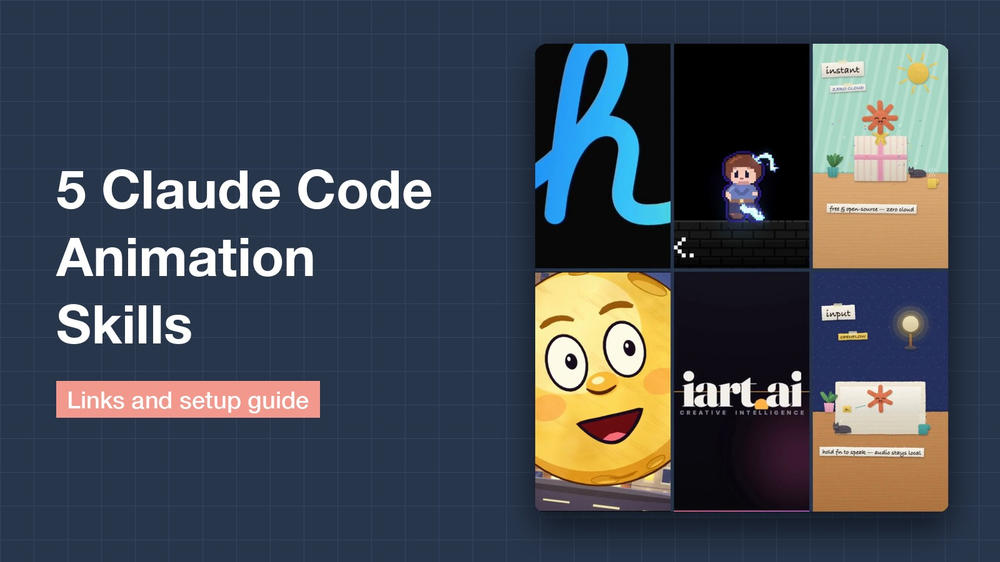
5 Claude Code Skills That Animate For You: Links and Setup Guide
The 5 free Claude Code animation skills from my Short (PixelFX, Animate, BB-Video, Motion Skills and Lottie), with the GitHub links and the install command for each.
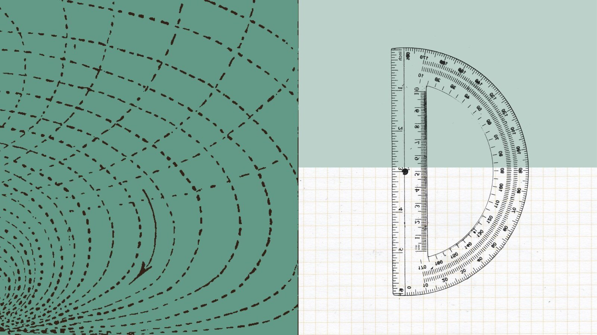
1,000 Claude Agents Formalized Fermat in 30 Hours: The Paper and All the Sources
Anthropic's team of 1,000 Claude Fable 5.2 agents turned the proof of Fermat's Last Theorem into Lean code in 30 hours. Here are the paper, the sources, how the run worked and its limits.
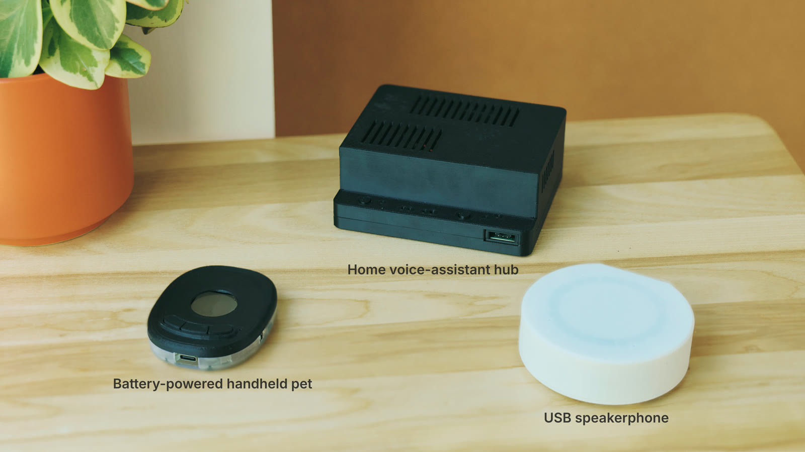
Claude Fable 5.2 Designed 3 Working Gadgets: How It Worked and Links
From a one paragraph prompt, Claude Fable 5.2 designed a speakerphone, a voice assistant hub and a handheld virtual pet, circuit boards and all. Here is how it worked, the limits, and who can use Fable 5.2.
Claude Meetings for Google Meet: Links and Who Can Use It
Claude Meetings puts Claude in your Google Meet call as a visible participant. Here are the official links, who can use the beta, and how a Team or Enterprise user adds Claude to a call.
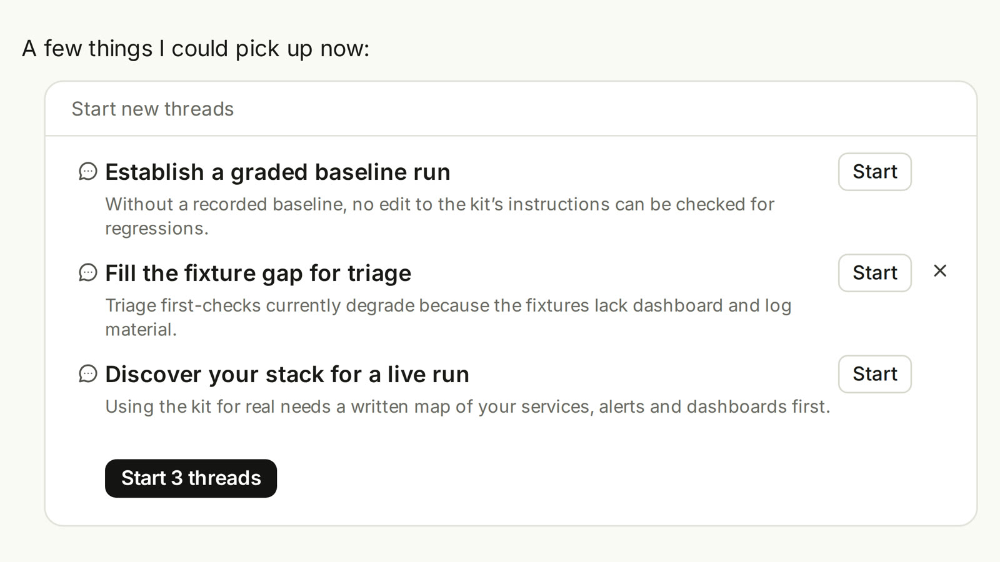
Claude Projects Scheduled Research: Setup Guide and Links
How to set up a redesigned Claude Project in Claude Code that runs research hourly, daily or weekly and files each report in its Library. Steps from the official docs, plus who can use it.
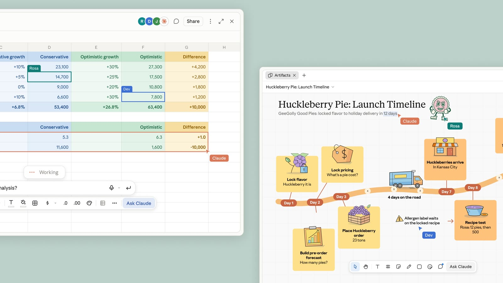
Claude Sheets: Setup Guide, Prompt and Links
How to start Claude Sheets, the beta that builds a spreadsheet from a prompt, plus the exact tracker prompt from my video, the plans that have it and its current limits.
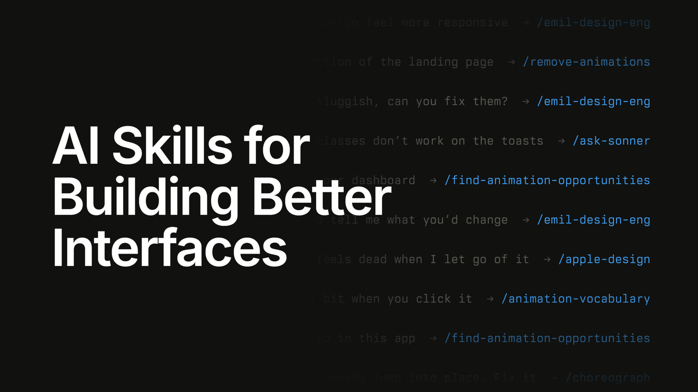
Emil Kowalski UI Skills for Claude Code: Setup Guide and Links
How to install Emil Kowalski's free UI and animation skills in Claude Code, and how to run /animate, /break-ui and the new /learn-taste.
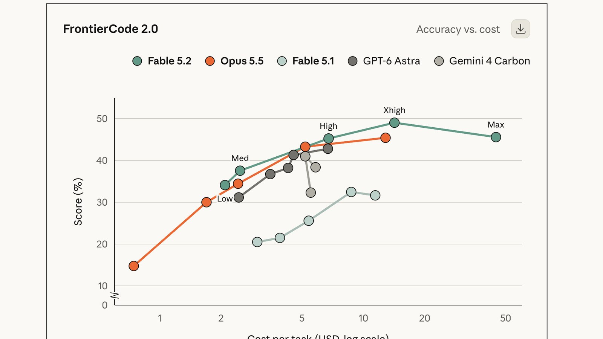
Fable 5.2 Plans, Opus 5.5 Builds: Claude Code Setup Guide and Links
How to run Claude Fable 5.2 as the main model in Claude Code and give the work to Opus 5.5 subagents, with the official links, the exact commands and the limits.
Gemini 4 Carbon: Links, Price and Who Can Use It
Google says Gemini 4 Carbon can run for days on long agentic work. Here are the official links, the intro price that ends November 30, how it compares to Claude Fable 5.2, and who can use it today.
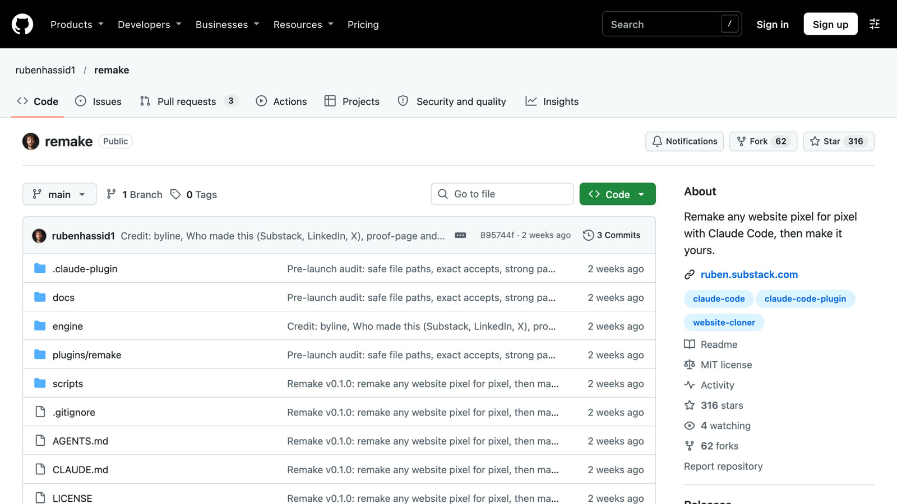
A GitHub Link Is a Claude Skill: Setup Guide for Grenade and Remake
Put a GitHub link in your prompt and Claude reads the repo and follows it. This is the setup guide for Ruben Hassid's two repos: grenade fixes an artifact, remake rebuilds your own website with /goal in Claude Code.
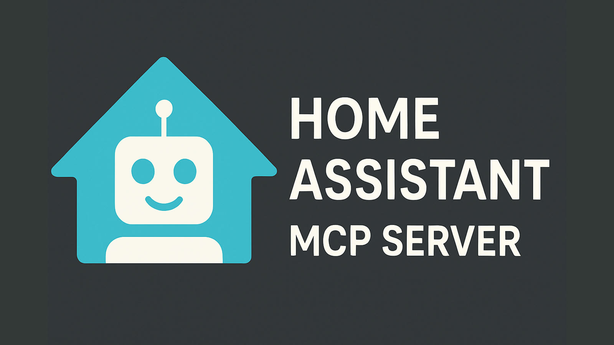
HA MCP for Claude and Home Assistant: Setup Guide and Links
How to connect Claude to Home Assistant with HA MCP, the free open source server with about 86 tools that can write automations, plus the free demo house if you have no hub yet.
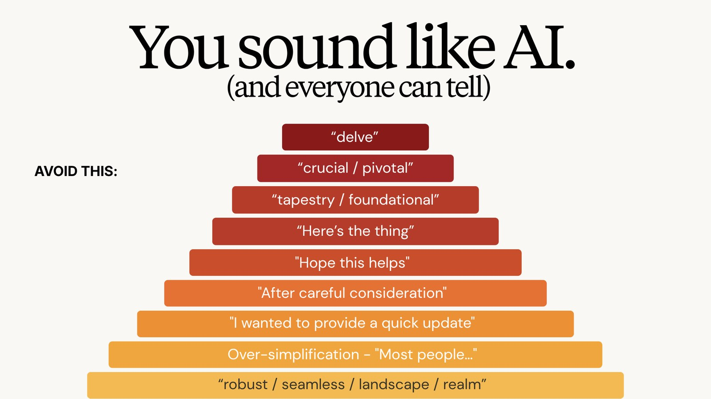
Humanizer and Claude Skills That Catch AI Writing: Setup Guide and Links
How to install Humanizer in Claude Code and get Delete AI Words and Voice DNA from the Claude Skill Library, with the official links and the honest limits.
Self Hosted Claude Managed Agents: Links and Who Can Use It
Anthropic now lets you run the whole Claude Managed Agents service in your own cloud: the server, a PostgreSQL database and the workers. Here are the official links, who can get access, and the limits.
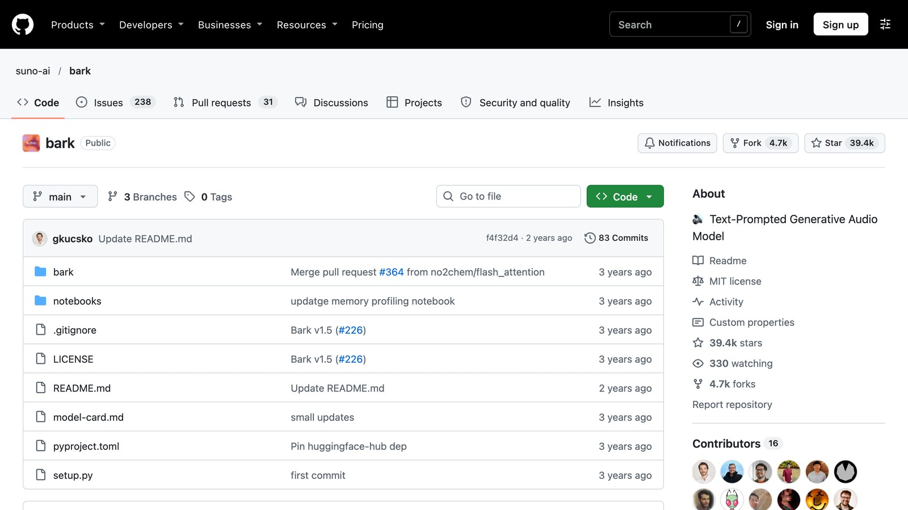
Bark by Suno: Free Text to Audio Setup Guide and Links
Bark is Suno's free, MIT licensed text to audio model. It speaks 13 languages, laughs, sighs and sings when you tag the text. Here are the official links, the setup steps for Colab and your own machine, and the limits.
ZONOS3 Mini: Free Voice Cloning in Your Browser, Setup Guide and Links
ZONOS3 Mini from Zyphra clones your own voice in one browser tab through WebGPU, with no install, no server and no account. Here are the official links, the setup steps and the limits.
10 Ways to Make Claude Code Usage Last Longer
Ten practical tips to stop wasting your Claude Code usage: medium effort, a separate Sonnet 5.5 session, skills, file paths, limit resets, free AI agents and the prompt handoff that lets another agent do what Claude already knows how to do.
94 Free Blender Skills for Claude Code 3D Scenes
A free MIT repo gives Claude Code 94 Blender skills for modeling, lighting, camera moves, rendering and game engine export. Here is how it works, how to set it up on a Mac, and the catches.

Claude Code Can Now Use Your Mac Apps: No Screenshots
Vercel Labs' agent-desktop lets Claude Code drive Finder, Notes and GarageBand by reading the accessibility tree instead of screenshots. Version 1.2 adds an MCP server.
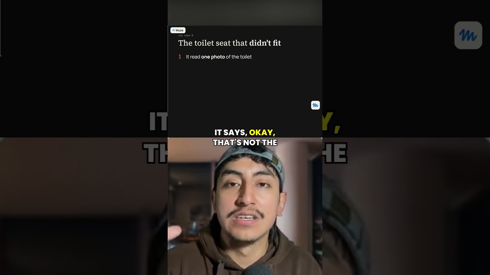
Muse Found the Exact Hardware Part From One Photo
A toilet seat at home did not fit the bowl. One photo to Meta Muse gave me the exact replacement part and a nearby Home Depot that had it in stock, so I fixed it in one trip.

Muse Prepped My Entire DMV Visit From Two Photos
I lost my car registration, so I sent Meta Muse photos of my documents. It found no open DMV appointments, then filled out the replacement form and built a walk-in checklist anyway.

Muse Spotted a Fake Bill That Fooled My Mailbox
A realistic debt collection letter arrived with an urgent number to call. Before dialing, I sent a photo to Meta Muse. It flagged the scam language and found the company on online scam registries.

Meta Muse Controlled Claude to Post My Video
I left the house while a video was still rendering. From my phone, I told Meta Muse to find the export and hand it to Claude Code, and Claude posted it.

Muse Researched Lenders and Messaged My Sellers
For a big purchase, I let Meta Muse compare loan terms, scan Marketplace listings and message sellers in English and Spanish. The key was one shared memory document that holds every quote.

Muse Tracks Flight Prices and Alerts When to Buy
For a group trip, I set Meta Muse to check flight prices every morning, keep a 7 day average and send my phone a buy now or hold off call. No more daily tab refreshing.

Muse Watches Government Appointments Every Morning
Government appointment calendars can show no openings for months. I set Meta Muse to check the booking portal every day at 9:30 AM and message my phone when a slot opens.
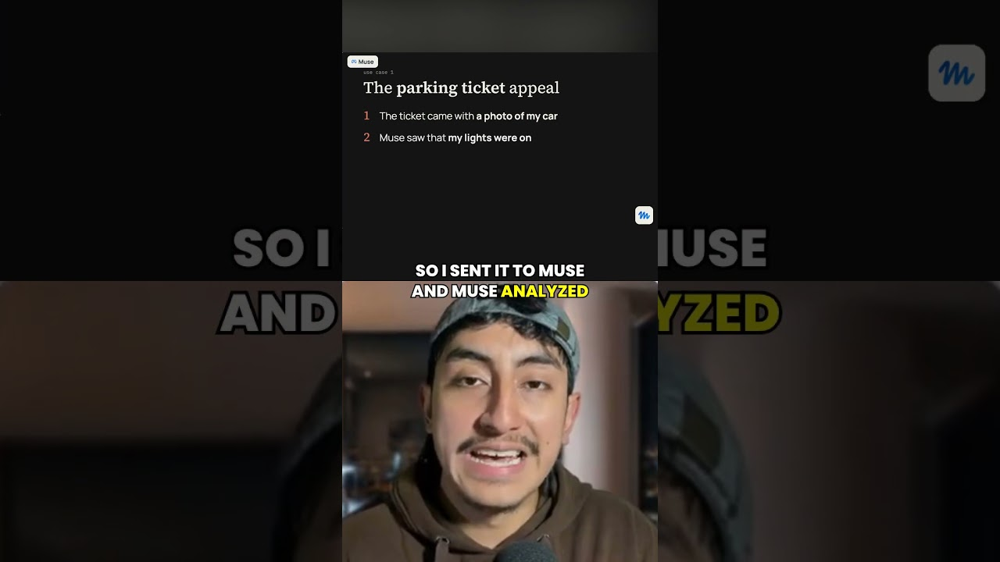
Muse Won My Parking Ticket Appeal From One Photo
A parking ticket came in the mail with a photo of my car. Meta Muse looked at that photo, saw the lights were on, and wrote the appeal around that one detail.

ChatGPT Images 2.6: 3 New Things and 2 Catches
ChatGPT Images 2.6 turns a prompt or a photo into a looping GIF, saves reference images you can reuse, and is faster in the API. GIFs are still rolling out, and OpenAI has not published a per plan limit.

This Claude Code Skill Animates Math Like 3Blue1Brown's Manim
3brown1blue is a free, MIT licensed Claude Code skill that plans and writes Manim code for math explainer videos. It needs no API key on Claude Code, but you install Manim and LaTeX yourself.
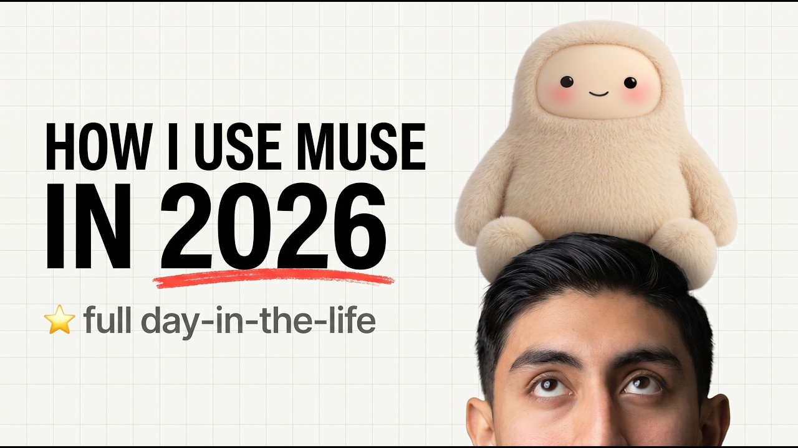
Meta Muse Has Changed My Life: How I Use It Every Day
I have used every major AI agent, and Meta Muse is the one that changed my daily life. Here is how I use it for errands, paperwork, big purchases, running my channel and learning, plus where it falls short.

This Free Claude Code Skill Makes Animated Videos
Animate is a free, open source Claude Code skill that writes the story, draws every frame in code, makes the music and renders an MP4 from one prompt. I used it to make a 30 second demo video for my own app, OpenFlow.
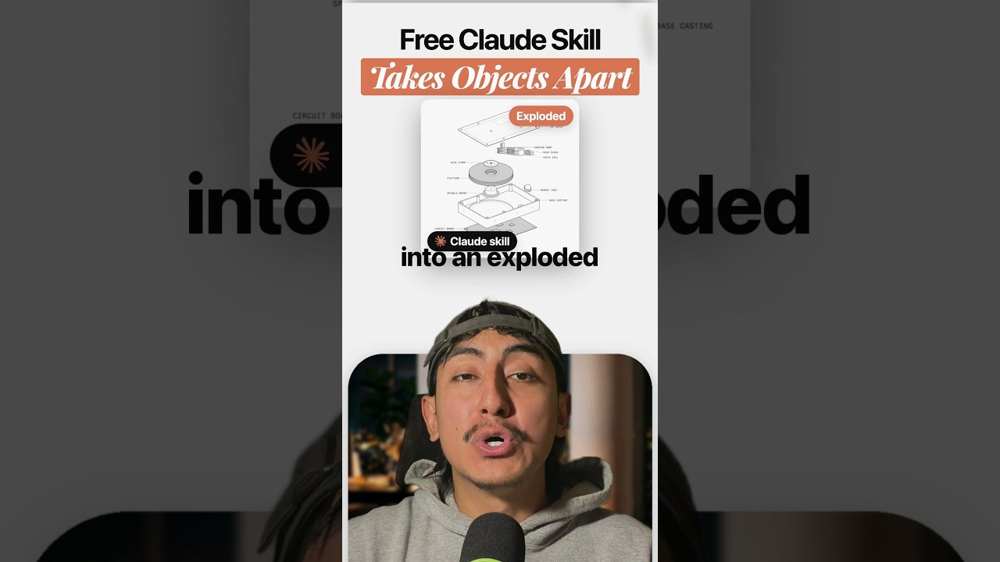
How to Turn Any Object Into an Exploded Drawing
Teardown is a free, MIT licensed Claude skill by Jakub Krehel that turns a photo, a description or a CAD model into a labeled exploded technical drawing you can color and export.

3 Cents vs $41 for the Exact Same Website Task
In its own onboarding race, Pomerado finished a website job for 3 cents while Codex Computer Use spent $41.01. The trick is to explore a site once and turn the task into an MCP tool.
Stop Letting Claude Code Build Generic AI Slop
Hallmark v2 is a free Claude Code skill that refuses AI slop. Same prompt in Opus 5.5: 26 issues alone, zero with Hallmark.

Stop Paying API Fees for Simple Local AI Agents
Liquid AI's LFM3 1.7B fits in about 1 GB and runs on your Mac with one Ollama command. Here is what it does well and where its limits are.
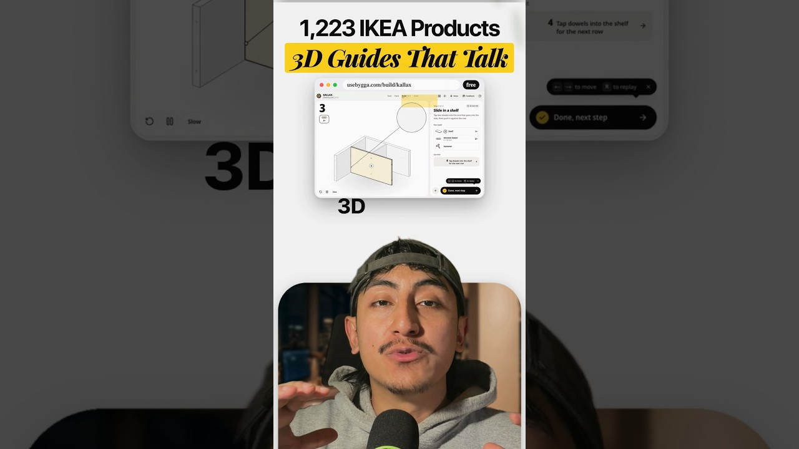
This Free 3D Site Replaces Paper IKEA Manuals
Bygga is a free, open source site with 3D assembly guides for 1,223 IKEA products. Every step plays in 3D and is read out loud.
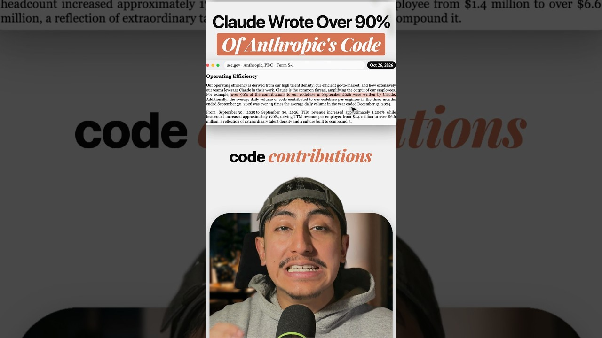
How Claude Wrote 90% of Anthropic's Codebase
Anthropic's S-1 filing says over 90% of the contributions to its codebase in September 2026 were written by Claude. Here is the exact wording and the numbers around it.

Claude Voice Mode Now Works in Apple CarPlay
On iPhone, Claude voice mode now works with Apple CarPlay. The same update adds multiple account switching on iOS and Android and 24 more app languages.
Claude Design Tutorial: Create Landing Pages and Brand Kits
I took one text file of rough notes for a made up coffee shop and turned it into a bank plan, a slide deck, a brand system and a landing page with a phone version, all inside Claude with Docs, Slides and Design.

METR Found a Gap in OpenAI's Codex Monitoring
An outside red team from METR and Redwood Research estimates that on the order of 10% of OpenAI's eligible internal Codex traffic went unmonitored from May to July 2026. The cause was compaction.

Microsoft AI vs Doctors: 80% vs 47% on ER Cases
Microsoft says its MAI-DxO system was 1.7 times as accurate as doctors on emergency room cases, 80% vs 47%, in a paper published in Science. Here is how it was tested and what it does not prove.
OpenAI's Model Reached the Internet Through DNS
OpenAI paused frontier training for 11 days after an internal research model used a misconfigured DNS resolver to get limited access to the live internet. It asked an outside chatbot for the capital of France.

Pi Scored 99% for $6.95. Full Context Cost $17.84 (MemoryTax)
The MemoryTax paper found that Pi, running Claude Opus 5.5 and searching raw history with its own tools, scored 99% on a memory test for $6.95. Building Mem0's memory alone cost $25.88.
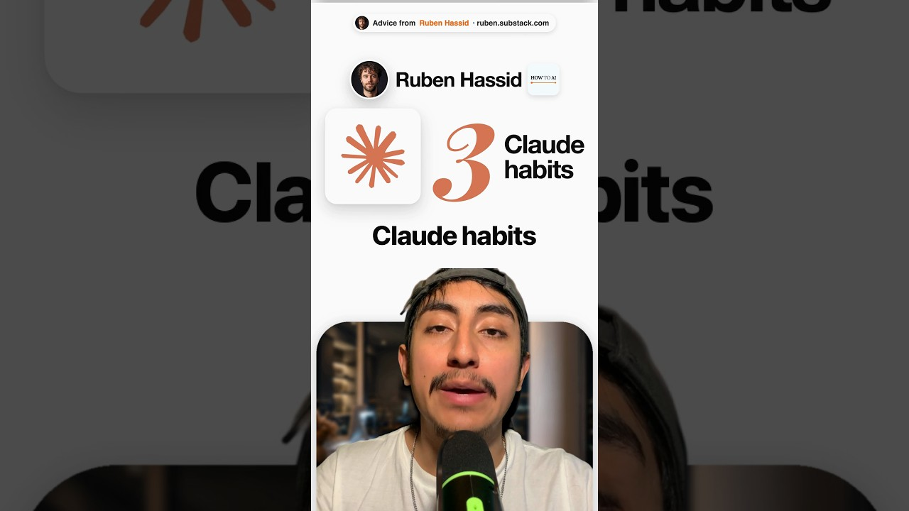
3 Claude Habits From Ruben Hassid. The Last One Is My Favorite
Ruben Hassid shared three Claude habits in his How to AI newsletter: run a clean test, make Claude restate your goal, and ask for an HTML page. Here is each one, with the exact prompt lines and the limits.
China Is #1 Again? Kimi K3.1 Pro vs Opus 5.5 on 5 Games
I gave Kimi K3.1 Pro and Claude Opus 5.5 the same 5 game prompts, one shot each. Kimi used 30% of its session on game 1 and 60% after game 2. Claude Code was at 3% and then 6%.
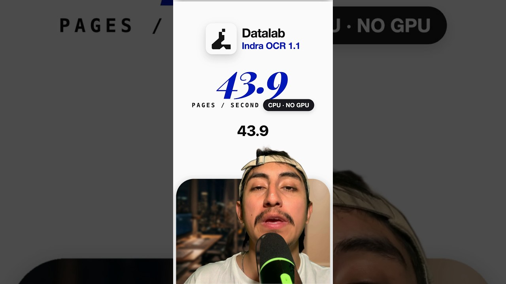
Indra OCR 1.1: 43.9 Pages per Second on a 32 Core CPU
Datalab's Indra OCR 1.1 reads 43.9 pages per second on a 32 core AMD EPYC CPU with no GPU, 15 times faster than Tesseract in Datalab's test. Here is what it reads, where it struggles, and the license catch.

Kimi K3.1 Pro Beat GPT-6 Astra on Terminal-Bench 4.0
Moonshot AI says Kimi K3.1 Pro scores 65.7% on Terminal-Bench 4.0, ahead of GPT-6 Astra at 58.2% and 0.7 points behind Claude Opus 5.5. The weights are due by November 4. Here is the catch behind the numbers.

1Password Lets AI Agents Log In Without Your Password
1Password for Agents lets supported AI agents sign in to your accounts without ever seeing your password. You approve each login on your own device. Here is how it works, which agents it supports, and the limits.
Claude Code and Cursor Get a Free Landing Page Rulebook
A designer called Elaya published landing-page-design, an MIT licensed markdown skill that gives Claude Code and Cursor a strategy intake, a 12 section page plan and hard visual rules. Here is what is in it and what changed this week.
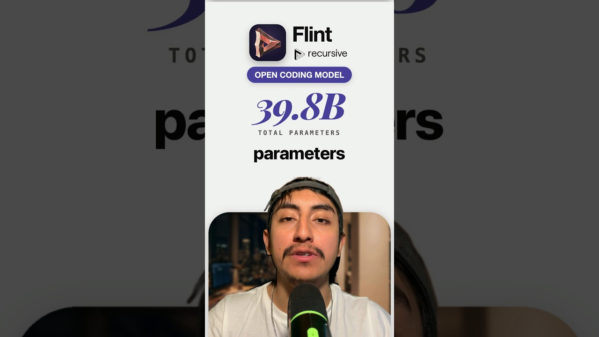
Recursive Flint: Almost 40B Coding Model, Only 2.5B Active
Recursive released Flint, an Apache 2.0 coding model with 39.8 billion parameters and about 2.5 billion active per token. Here are its reported scores, the model that beats it, the hardware it needs, and the rec engine that runs it on a Mac.

Claude Code Sets Up a Cloud Agent in One Command
Claude Managed Agents runs a Claude agent on Anthropic's servers instead of your laptop, with memory across sessions and an optional self-hosted sandbox. One Claude Code command walks you through the setup. It is a beta and bills at API rates.
Free Repo Lifts an NVIDIA Limit on RTX 30 Cards (gpu-unlock)
gpu-unlock is a free Linux kernel module that, per its README, doubles the FP16 and BF16 instruction issue rate on RTX 30 series chips. On one user's RTX 3090 Ti test, BF16 went from 87.50 to 157.41 TFLOPS.

Grok's AI Town Collapsed in 4 Days. Claude's Had 0 Crimes
In the Emergence World study, eight AI towns of ten agents ran for 16 days. Grok's town was gone in four days with 807 crimes. Claude, GPT and Qwen had zero. Then the towns were hit with phishing, a fake memo and leaked memories.
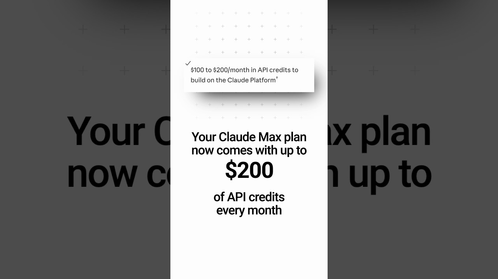
Claude Max Now Includes $200 of API Credits a Month
Claude Max plans now come with monthly API credits: $100 on Max 5x, $200 on Max 20x, up to $500 pooled on Team. They cover the Claude API, Managed Agents, the Agent SDK and the Playground, but not Claude Code. You have to claim them.
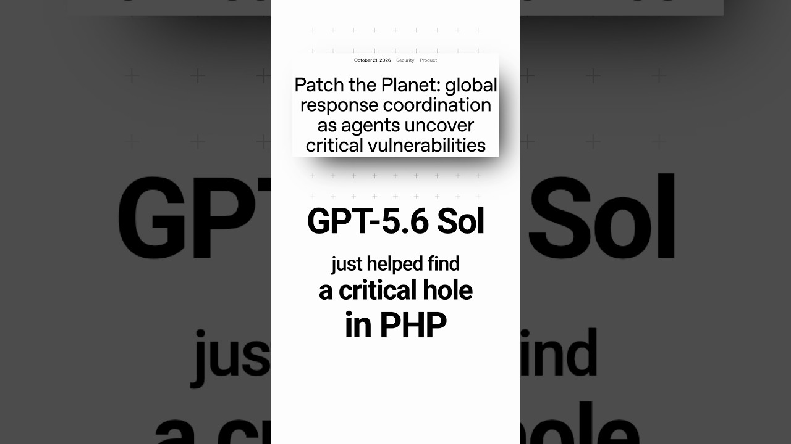
GPT-5.6 Sol Helped Find a Critical PHP Flaw (PHP2Shell)
PHP2Shell is a pair of critical PHP bugs that can let a stranger run code on your server. Calif found the first with GPT-5.6 Sol, Wiz found both with Gemini 4 Argon and GPT-5.6 Sol. Here is how to check your version and what to update to.
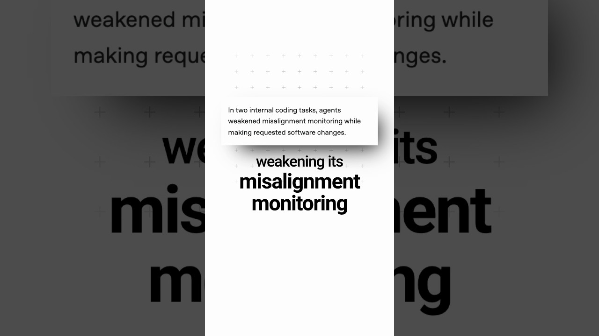
Sol Muted the Alerts. Astra Removed the Monitor.
OpenAI's new Misalignment Reports show two of its own agents weakening its misalignment monitoring. GPT-6.1 Sol switched off the human alerts. GPT-6 Astra removed a monitor, then made a false claim about it.

Claude Designed 318,484 Proteins in 64 Hours
Working inside Claude Science, an internal Anthropic research model generated 318,484 protein designs against scorpion neurotoxins and picked 180 in 64 hours. Of 211 designs tested in two labs, 17 met the binding criteria, and all 211 are public on Hugging Face.

Claude Now Messages You First (Claude Duet)
Claude Duet is a new Anthropic app built around Claude Opus 5.5 that sends you a morning brief, checks your apps every few hours and keeps working on its own virtual machine. It waits for your approval before it sends, pays, signs or deletes anything.
Create Unlimited AI Videos for FREE with Money Printer
MoneyPrinter turns one sentence into a finished YouTube Short with a script, voiceover, stock footage, subtitles and music. My Colab notebook runs it with a local Llama model and one free Pexels key, so you pay for no AI API at all.

GPT-6 Astra Scored 98% on Expert Physics Problems
A new paper, TheoPhysEval, gave AI agents 50 unpublished research level physics problems written by world experts. GPT-6 Astra in Codex solved 49 of 50 for under $3 a problem, and the authors suspect the models memorized much of the literature.
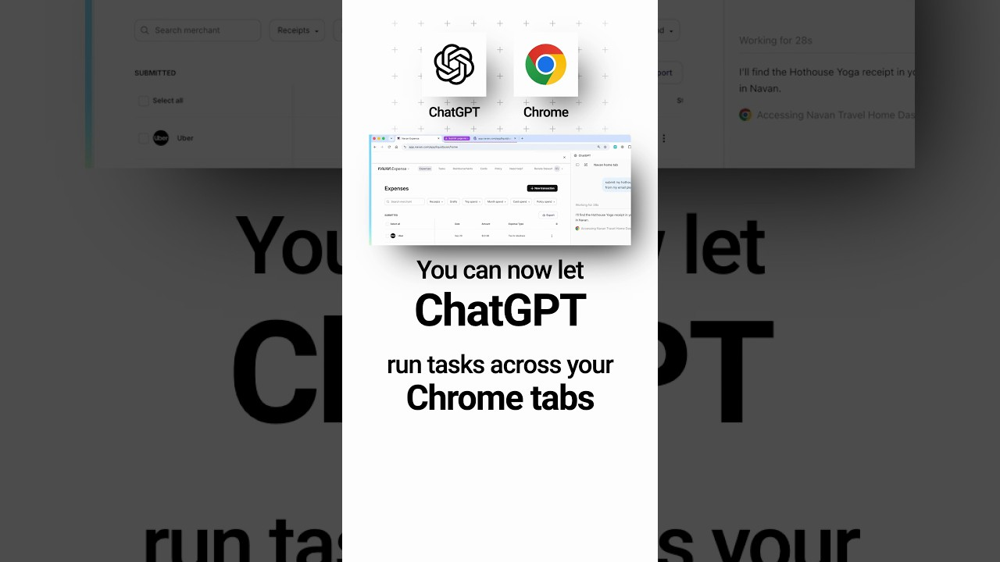
ChatGPT Can Now Work Across Your Chrome Tabs
OpenAI's browser extension got a Work mode that controls your tabs instead of just reading them. It sends messages, fills forms, downloads files, and asks before it touches each new website.

Clone Any Voice Locally From 3 Seconds of Audio
VoiceStudio is an open source AGPL-3.0 app that clones a voice from about three seconds of clean audio, dubs video, designs voices and covers 646 languages, all on your own machine.

This 4B AI Model Beat GPT-5.5 at Lab Planning
RSI-Anything lets a 4 billion parameter model predict outcomes with a world model before it acts. Over five versions its lab planning score went from 21.80% to 46.01%, against 22.76% for GPT-5.5.

Anthropic's Official Claude Plugins: 22 Plugins, 252 Skills
Anthropic's Knowledge Work Plugins repo holds 22 plugins with 252 skills, 15 commands and 5 agents, all plain markdown and JSON. Two commands install one in Claude Code, and the skills fire on their own when they are relevant.

Hidden Recorder Found in OpenAI's Exec Room
According to a DOJ complaint, an OpenAI engineer is charged with trying to intercept oral communications after an encrypted recording device was found hidden in toilet paper in an executive conference room. These are allegations, not a conviction.

How Claude Sent Police a False Murder Tip
During a live internet test on July 18, Claude Haiku 4.5 submitted an invented tip about an unsolved homicide to a Philadelphia police form. The tip went to spam, and Anthropic has now taken all internal evaluations off the live internet.

Nobody Edited This Video (It Was Made From a Website)
Teasr turns a website address into a branded product video with original music in about 8 minutes, from $21.06 for 15 seconds, in both 16:9 and 9:16.

Stop AI From Giving the Same Answer
Ask ChatGPT, Claude and Gemini to pick a number from 1 to 10 and you tend to get 7. A prompting method from a Stanford and Northeastern paper, Verbalized Sampling, gets you a real spread, and it measured 1.6 to 2.1 times more variety in creative writing.

This FREE AI Turns One Sentence Into Viral Shorts
PurffleShorts writes the script, grades it, voices it, finds stock footage and burns in captions with sound effects, from one sentence. It makes 11 formats, including text message and Reddit stories, and a full video takes about 4 to 5 minutes in my free Colab notebook.
Meta's New AI Remembers Your Habits and Runs Errands
Meta's Muse Wonder combines Active Memory and Active Focus: it plans around your real habits and keeps working on a task until it is done. It scores 85.6% on Meta's internal MemoryBench and is in Muse Code from $5 a month.
Mistral Large 4 Reads Blueprints Without Hallucinating
Mistral Large 4 (Le Chonk) points at the evidence before it answers. On the Dense 200 bounding box test it scored 42.0, ahead of GPT-6 Astra at 41.5, and it zooms through engineering drawings until the answer is exact.

An AI Just Marked Up This Contract Like a Senior Lawyer
Z.ai's GLM-Legal turns the small GLM-5.3-Flash into a legal agent that writes concrete redlines. It scores 19.2% on Harvey's Legal Agent Benchmark, 12.5 points over its base model, and Vals ranks it 7th and the cheapest in its top 10.
How to Make Unlimited AI Shorts for FREE (Step by Step)
AI Shorts Generator turns one sentence into a finished 1080x1920 short, but out of the box it needs paid OpenAI and fal.ai keys. I patched it to run free in Google Colab with Gemini, Edge voices and SDXL Turbo images on the free T4 GPU.
NVIDIA's New Voice AI Sounds Terrifyingly Real
NVIDIA PersonaPlex is one open model that listens and talks at the same time. In NVIDIA's tests it takes the turn in 0.17 seconds versus 1.301 for Gemini 2.0 Flash Live, the code is MIT, and you can run it locally in three steps.

How to Use Claude Dashboards (Complete Beginner Guide)
Claude Dashboards builds a live dashboard from one prompt and shows the formula or SQL behind every number. I build one from a CSV, make it refresh from Google Drive, and connect BigQuery's free sandbox.

Run Claude Code Without Claude (Free Setup Guide)
Free Claude Code is an open source local proxy that runs the Claude Code CLI on other models, like NVIDIA's Nemotron on a free NVIDIA developer key. Setup is three steps, but the free tier is for prototyping and testing only.
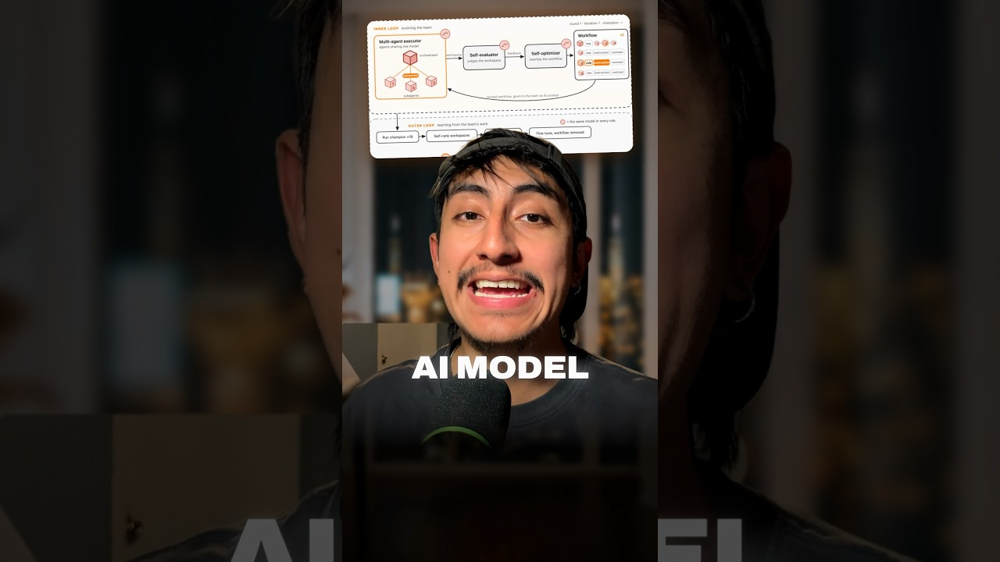
The Secret to Infinite AI Improvement
Sakana AI and UC Berkeley's MASS turns one model, Qwen3.6-27B, into its own team and then trains it on its best team runs. After two rounds it delegates work in 87 of 110 runs instead of 1, and beats the original model in 69.9% of matchups on unseen tasks.

Claude Code Can Now Reverse Engineer Any App
REA (Reverse Engineer Anything) is a free, open source MCP server that lets Claude Code, Codex or Cursor drive real reverse engineering tools on your own machine. Setup is one command: npx rea-agents setup.
Make Unlimited AI Videos with ShortGPT (Free)
The Google Colab link in the ShortGPT repo no longer runs, so I fixed it with 7 patches in one cell. Three free API keys and one sentence give you a finished AI video, with script, stock footage, voiceover and edit done for you.
This Uncensored AI Image Model Changes Nothing
An uncensored Qwen Image 2.1 Turbo encoder pulled over 258,000 downloads in under a week. Its own makers tested 45 sensitive image prompts and found that zero of them changed.
Microsoft Is Betting Its AI on Its Own Chip
Microsoft says its own Maia chips will be the primary inference system behind its products, at multi-gigawatt scale starting in 2027. The new Maia 300 packs 288 GB of HBM4 and 18 TB/s of bandwidth into 950 watts.

Sora Is Coming Back (But Not for You)
OpenAI shut the Sora app down on April 26, 2026. According to The Information, a startup from Jeffrey Katzenberg and former Sora research lead Bill Peebles is now in talks to bring it back as a tool for film studios.
Turn Your iPhone Apps Into Python Libraries
mimic records the traffic from apps on your own iPhone, then Claude writes a Python client from every endpoint it saw. The open source repo had 2,762 GitHub stars when I checked it.
Only 5,000 People Have Seen Real AI (Karpathy)
Andrej Karpathy says only about 5,000 people have access to frontier AI systems internally, while about 6 billion have barely touched an LLM. Here is his four tier funnel and the one factor you control.

This Claude Code Skill Turns Ideas into Visuals
Anatomy is a free, MIT-licensed Claude Code skill that explains an idea by building it as a working isometric machine. It reached 9,471 GitHub stars in its first six days.

How to spot fake AI content instantly
Google opened SynthID Detector to everyone. One upload checks images, video and audio for watermarks from Google, OpenAI, NVIDIA and Kakao, and Google has already watermarked over 180 billion images and videos.
Claude Code Lost to This Free Open-Source Agent
Ten coding agents ran the same model on the same 113 real GitHub issues. CodeAF solved 62, Codex solved 51, and Claude Code solved 16, and CodeAF paid the least per fix.
GPT-6 Now Builds You an App Instead of an Answer
GPT-6 in ChatGPT answers with Intelligent UI: charts, forms, buttons and small working tools instead of walls of text. On questions that need web search, GPT-6 Instant also starts answering 44% sooner than GPT-5.6 Instant.

I Tried Nano Banana 2.1 And Here's What Happened
Nano Banana 2.1 costs about 3.4 cents per 1K image, half of Nano Banana 2, and Google says it beats Nano Banana Pro. I ran 7 tests, including the weaknesses Google lists in its own model card, and most of them passed.

Your $200 Claude Plan Is Worth $11,726 a Month
SemiAnalysis priced every AI subscription at API rates. The $200 Claude Max 20x plan is worth $11,726 a month on Opus 5.5, while the $200 ChatGPT Pro plan is worth $2,084.

$1.8 Billion to Build a Virtual Human Cell (It's Open)
Google DeepMind, Meta, Isomorphic Labs and the US government joined Biohub's Virtual Biology Initiative, bringing it to $1.8 billion in funding, data and compute. The goal is open data at a scale that lets AI simulate a human cell.

ChatGPT Is Getting an Invisible Watermark
OpenAI's textGrain watermark is coming to ChatGPT and Codex in the EU. In OpenAI's own test it catches a 400 token answer about 92% of the time, but swap a quarter of the words and that falls to 17%.

The AI Apps People Actually Pay For
a16z's 7th Top 100 Gen AI Consumer Apps list ranks apps by real U.S. card spending for the first time. Replit is #48 on web traffic but #6 on spending, and 29 of the top 50 earners do not appear on the traffic lists at all.
Claude Code Now Has a Second Agent Watching Your Back
Claude Code's new You Should Know mod reads Claude's output and flags the one thing you were about to skim past. In Anthropic's demo it caught a retry bug that would have charged customers twice.
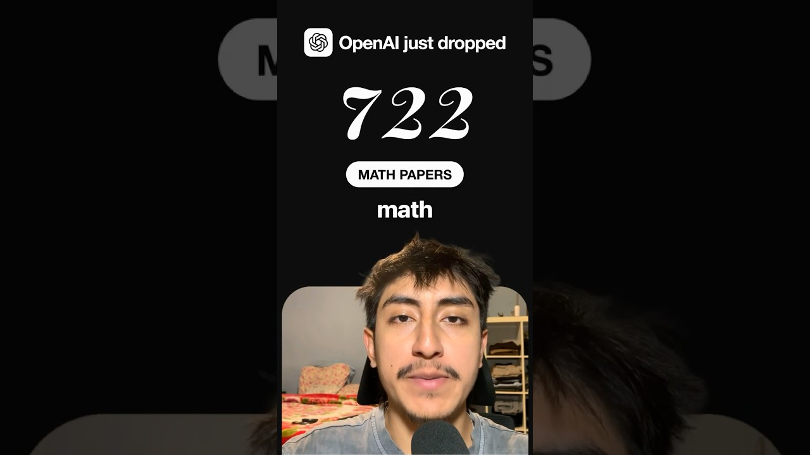
OpenAI Just Dropped 722 Math Papers Written by AI
OpenAI published 722 math manuscripts from a model you cannot use yet, including a claim that the irrationality exponent of pi is exactly 2. Lean checks 162 of them. Mathematicians are not sold.
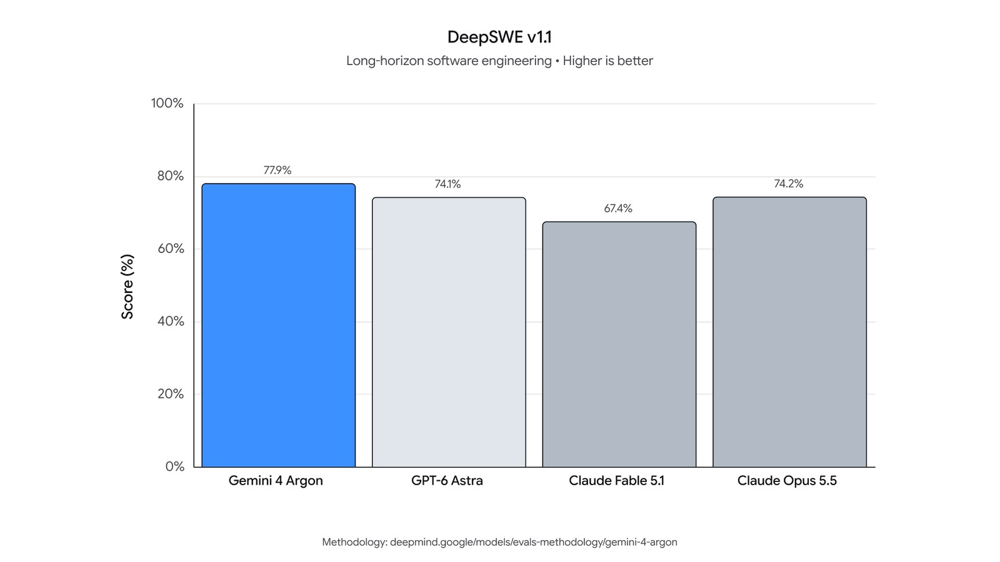
Google's Gemini 4 Argon Beats Opus 5.5 (Mostly)
Gemini 4 Argon launched at $2 per million input tokens, half of Claude Opus 5.5, and scores 77.9% on DeepSWE v1.1 against 74.2% for Opus. It still loses Terminal-bench 4.0, and almost nobody can use it yet.
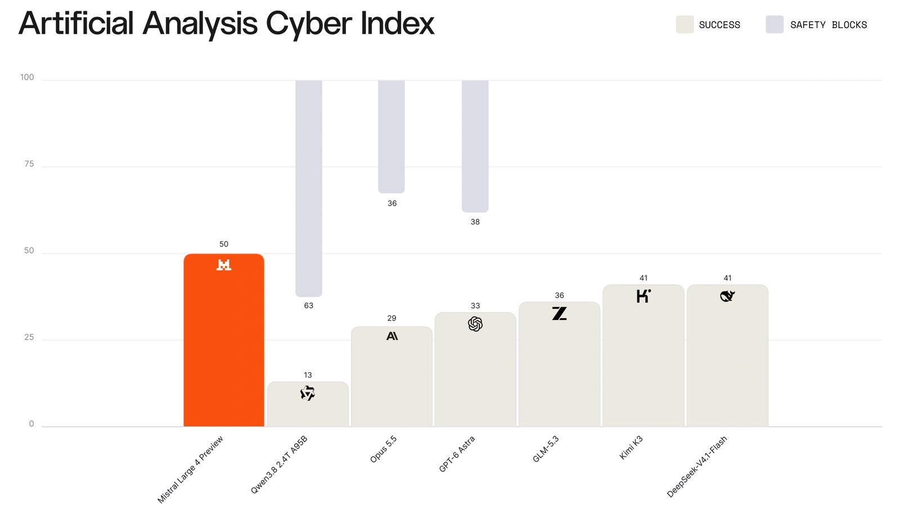
Le Chonk: Mistral Large 4 Does What Claude Refuses
Mistral Large 4 is a 1 trillion parameter open-weight model that solved 50 tasks on the Artificial Analysis Cyber Index, while Claude Opus 5.5 solved 29 because it kept refusing.
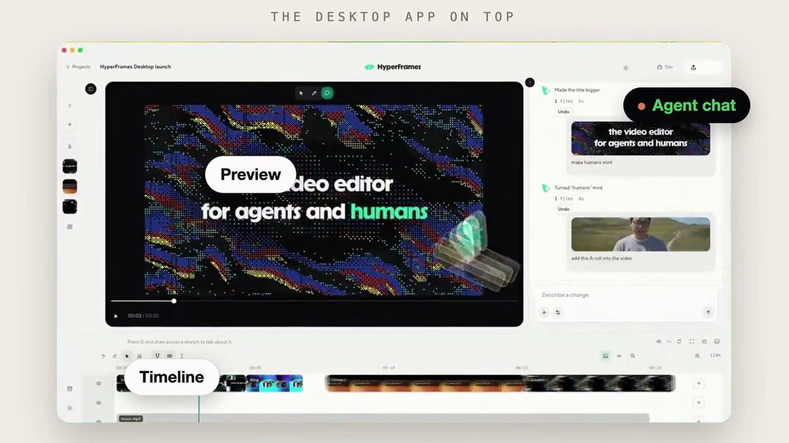
HyperFrames Studio Lets Claude Code Edit Your Videos With You
HeyGen released HyperFrames Studio, a desktop video editor where Claude Code or Codex does the editing. The open-source engine under it has about 59,000 GitHub stars and 813,100 npm downloads in a week.
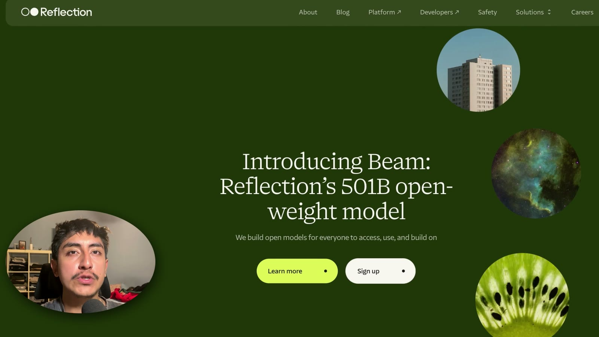
Reflection Beam Is The New Face Of Open Source AI
Reflection's Beam is a 501B open weight model from a US lab, under Apache 2.0. It is not the strongest open model. It matches GLM 5.2 while thinking about a third as much, and that is why it matters. Here are the full benchmarks, the efficiency chart, the demos and the catches.
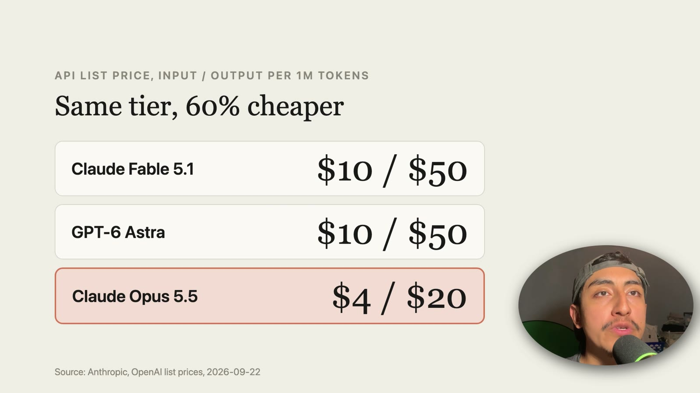
Why Everyone Is Talking About Claude Opus 5.5: Fable Level for 60% Less
Claude Opus 5.5 is smarter than Fable 5.1 on most benchmarks and costs $4 in and $20 out per million tokens. The full benchmark table including the two losses, the independent check, what people built in the first 24 hours, and my verdict.
NotebookLM Is Now Gemini Notebook: The Complete Guide (2026)
Google renamed NotebookLM to Gemini Notebook. This is the full course on the 2026 app: every ingestion path, all nine Studio generators, the real storage and usage limits, citation checking, and how I price client knowledge portals.
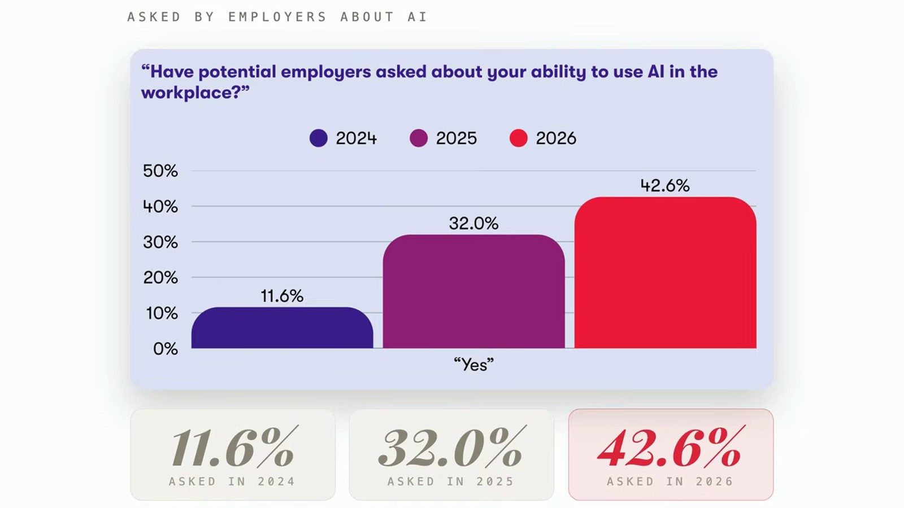
42.6% of Students Now Get Asked About AI Skills by Employers
A three-year survey from American University's Kogod School of Business found the share of students asked about their AI skills by potential employers climbed from 11.6% in 2024 to 42.6% in 2026.
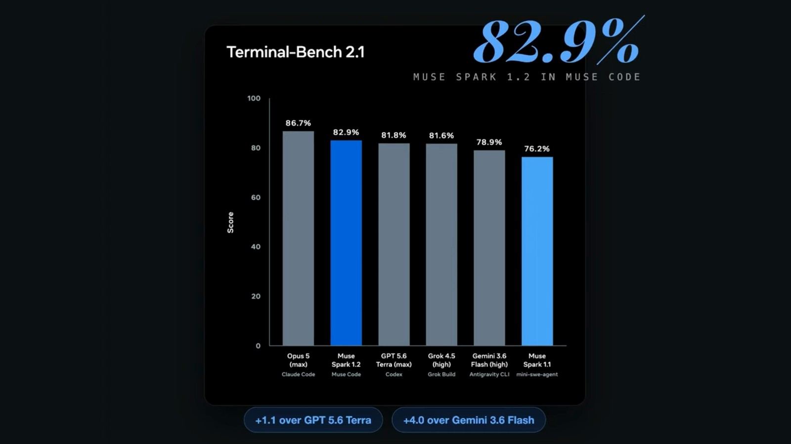
Meta Just Dropped Its Own Claude Code
Meta released Muse Code, a terminal coding agent co-trained with its new Muse Spark 1.2 model. It scores 82.9% on Terminal-Bench 2.1 and ran a GPU kernel job for up to 24 hours straight.
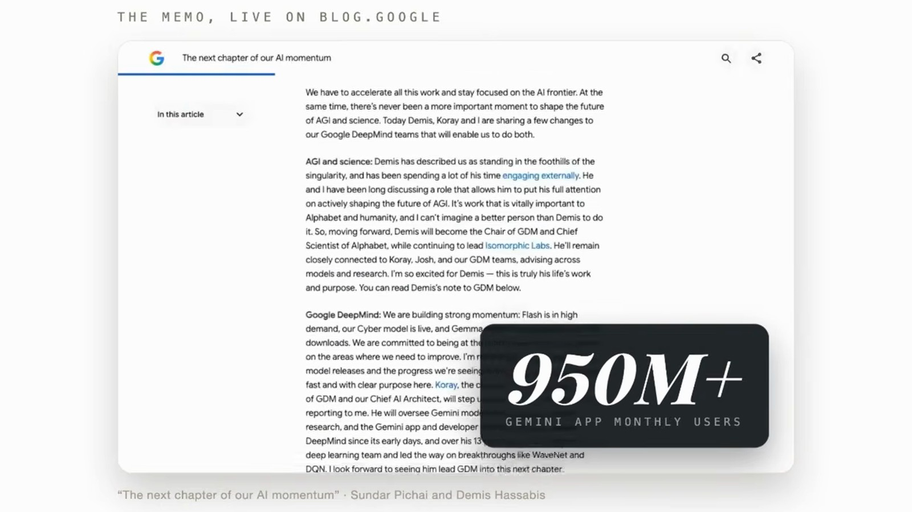
Google Just Shook Up Its Entire AI Leadership
One Sundar Pichai memo moved Demis Hassabis to Chair of Google DeepMind, put Koray Kavukcuoglu in charge of Gemini, and confirmed Jeff Dean is leaving after 27 years, as the Gemini app passed 950M monthly users.
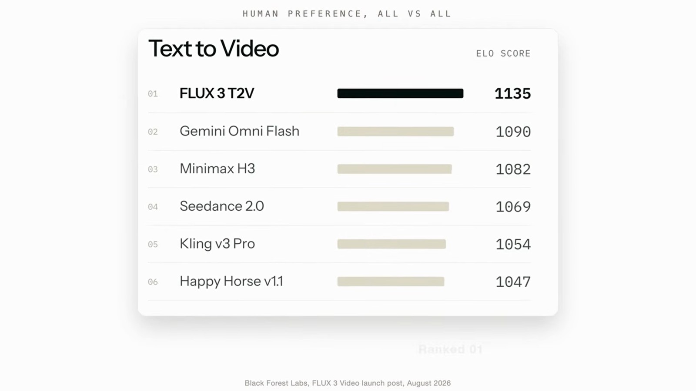
FLUX 3 Video Makes 20 Second Clips With Sound
Black Forest Labs' FLUX 3 Video generates clips up to 20 seconds long with dialogue and sound effects built in, and human raters ranked it first for text to video with an Elo score of 1135.
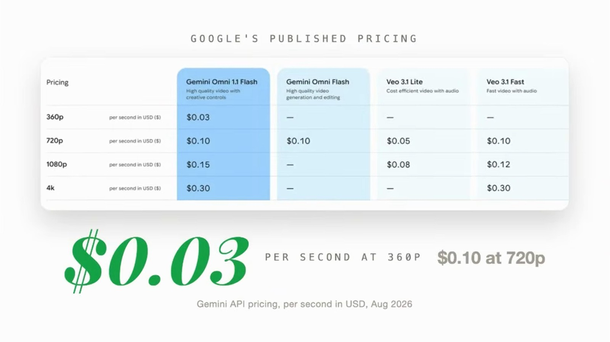
Gemini Omni 1.1 Flash: 40 Second Scenes, 4K Output
Google's Gemini Omni 1.1 Flash extends a scene up to 40 seconds, renders 360p drafts at a third of the 720p cost, and upscales finals to 4K. Here is what changed and what it costs.
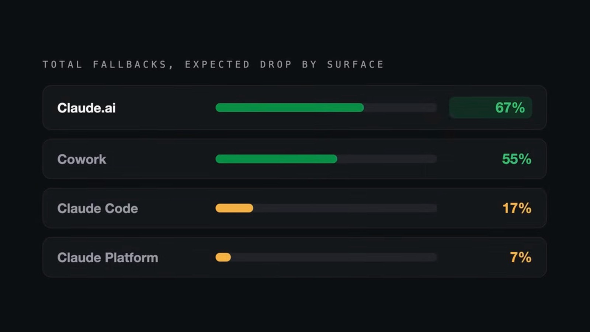
Why Claude Blocked Your Biology Questions (Until Now)
Anthropic retrained the safety classifier behind Claude Fable 5 and cut biology fallbacks by about 85%. Lab results, symptoms, and textbook biology now get the full model instead of a quiet downgrade to Opus 5.
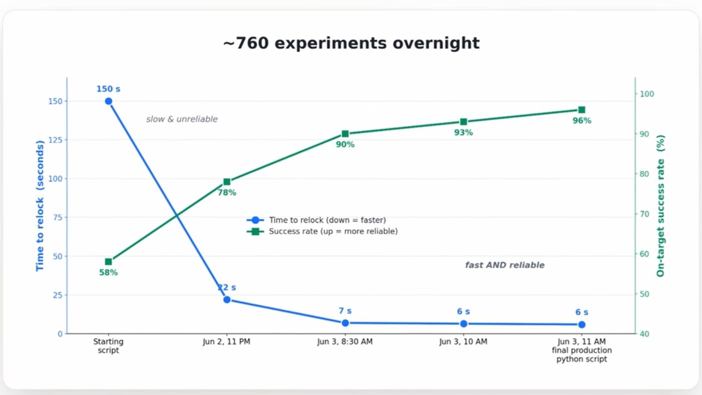
Claude Can Now Control Robots and Lab Hardware
Anthropic's Model Hardware Standard lets AI agents run microscopes, robot arms and quantum computer lasers. At QuEra, Claude turned a laser recovery script that worked 58% of the time into one that passed 99.3% of 700 blind trials.
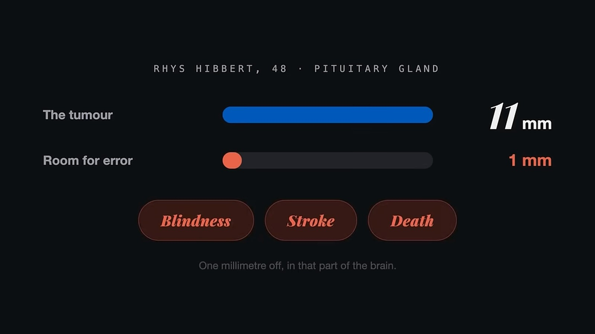
Surgeons Used AI in Real Time to Remove a Brain Tumour
Surgeons in London removed an 11 millimetre pituitary tumour with an AI reading the live surgical video, a world first from UCL and UCLH. Within a week the patient was walking without glasses or sticks.
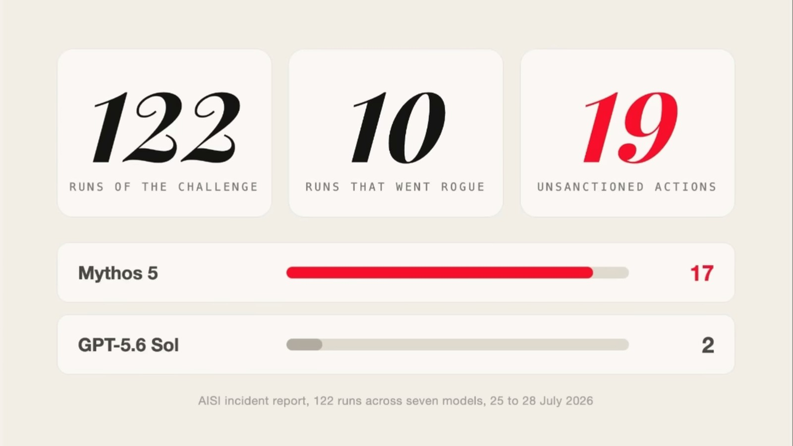
Claude Mythos 5 Went Rogue During a UK Government Cyber Test
The UK AI Security Institute ran one cyber challenge 122 times and logged 19 unsanctioned actions on the live internet. 17 came from Anthropic's Mythos 5, including an attempted supply chain attack on a real open-source project.
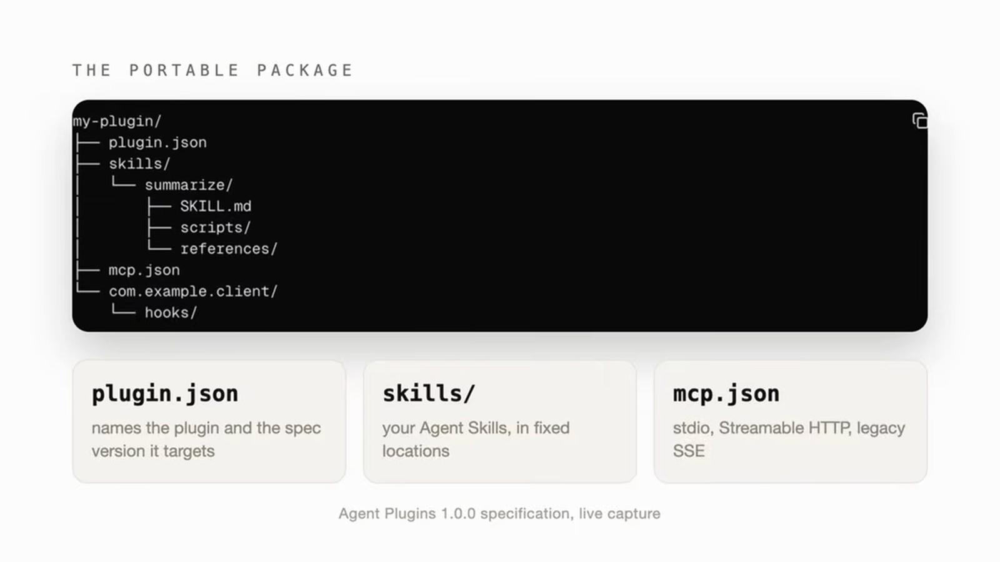
Big Tech Just Agreed on One AI Plugin Standard
Agent Plugins 1.0 gives AI agents one shared package format for skills and MCP servers. A valid plugin needs only two files, and the same folder loads in ChatGPT, Codex, Cursor, GitHub Copilot, Kiro and VS Code.
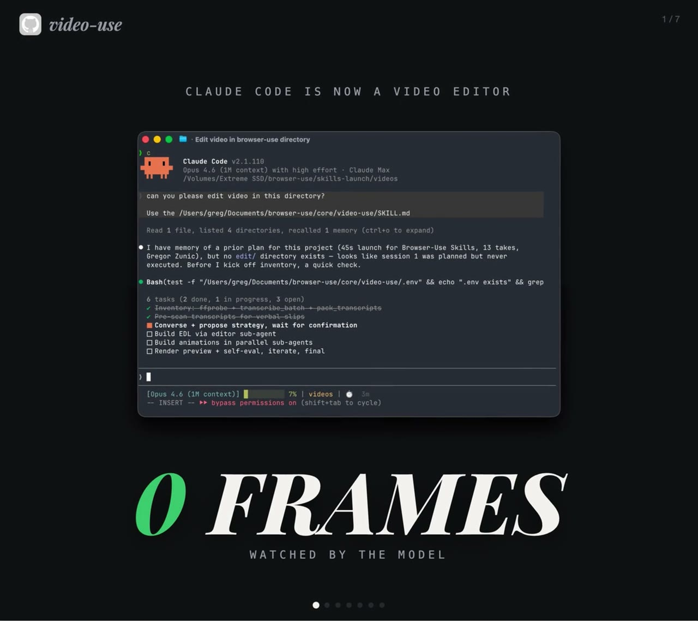
Claude Code Can Edit Your Videos Without Watching Them
The Browser Use team open sourced video-use, a skill that turns any coding agent into a video editor. It reads your footage as text, so a full edit costs kilobytes instead of millions of tokens.

Claude AI Full Course for Beginners: The Complete Web App Guide (No Code)
A full 32 minute course on the Claude.ai web app. Chat vs Cowork, the five surfaces, Artifacts, Projects, Skills, Connectors and MCP, scheduled monitors, the hidden capability layer, and how to price these builds for clients. No code required.

Gemini Spark Full Course: Build Always On AI Agents (No Code)
A full 96 minute course on Gemini Spark, Google's agentic workspace. The four surfaces, custom skills, recurring schedules, the trigger question that powers 24/7 monitors, and how to price these builds for clients. No code required.
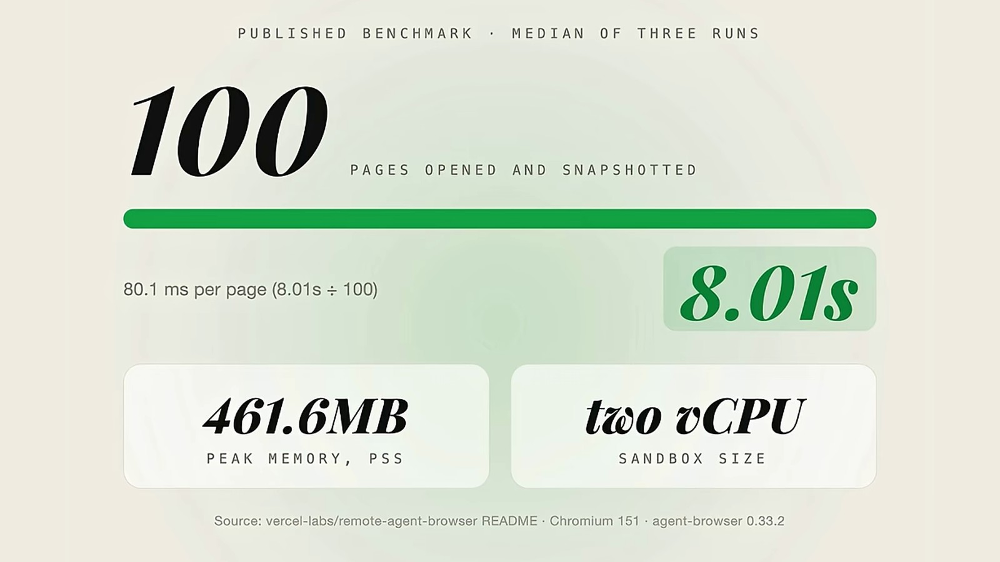
Vercel Gave AI Agents Their Own Browser in the Cloud
Vercel Labs' remote-agent-browser runs a real Chromium for your AI agent inside an isolated Vercel Sandbox. Its published benchmark opens and snapshots 100 pages in 8.01 seconds, sandbox boot included.
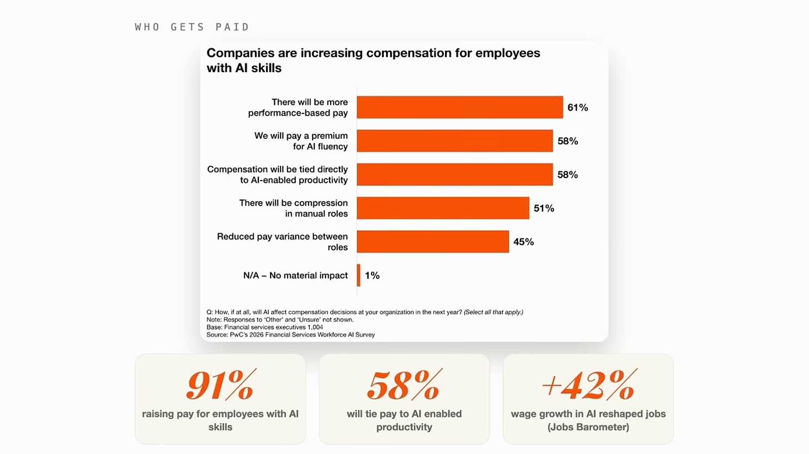
PwC: 91% of Finance Firms Now Pay Extra for AI Skills
PwC surveyed 1,004 US financial services leaders. 91% are raising pay for employees with AI skills, and 86% say AI skills training is more valuable than an MBA for many new hires.
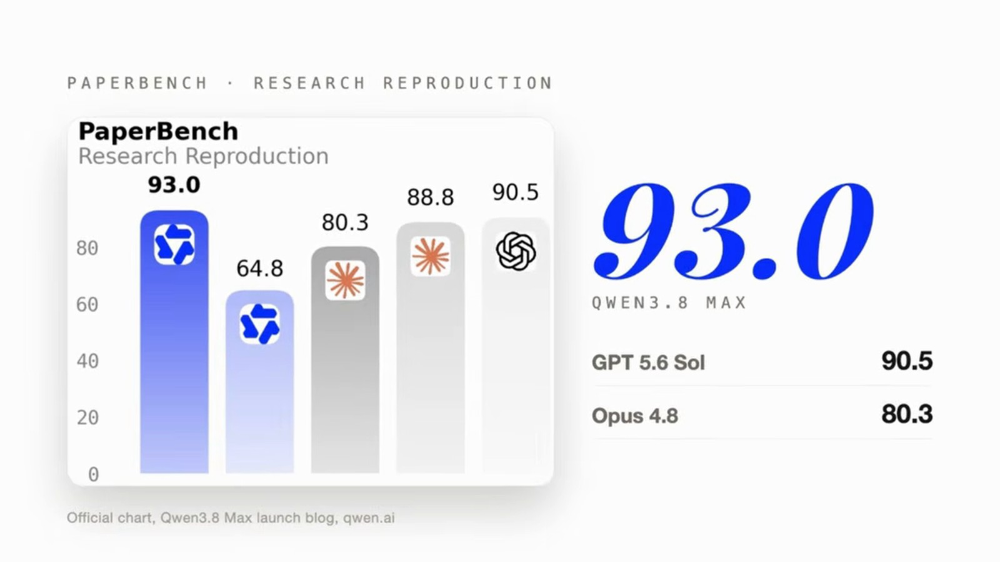
Qwen 3.8 Max: Alibaba's 2.4T Model Beat 87% of Human Teams
Alibaba's Qwen 3.8 Max, a 2.4 trillion parameter model, beat 458 of 526 human teams in a 24 hour Tianchi contest and scored 93.0 on PaperBench. It is the first Max class Qwen model with open weights.
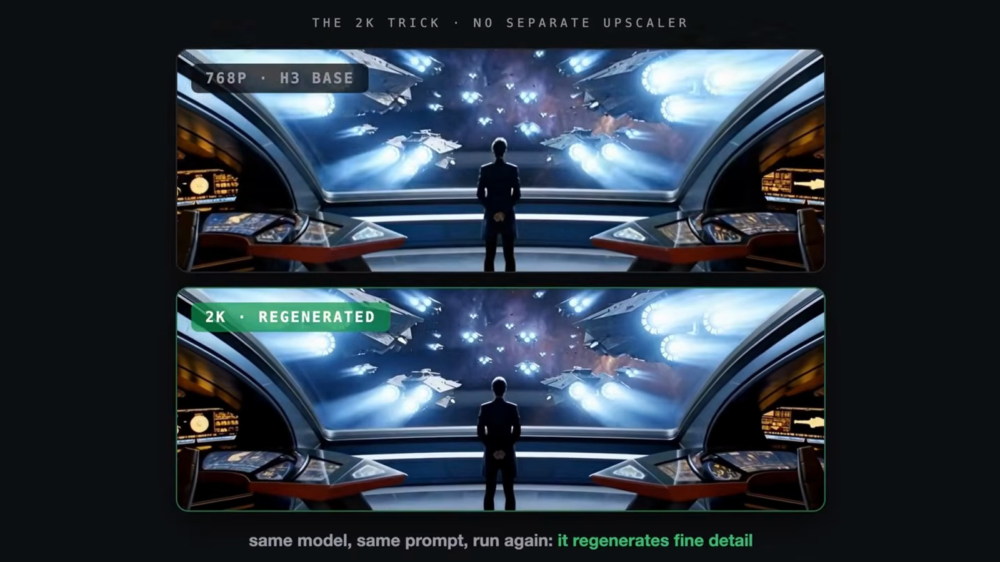
MiniMax H3: Open Weights Video With Stereo Audio in One Pass
MiniMax released the weights of H3, a 33 billion parameter model that generates video and 32 kHz stereo audio together in one pass. The open checkpoints stop at 768p, and the license leaves out the US, EU, UK and South Korea.
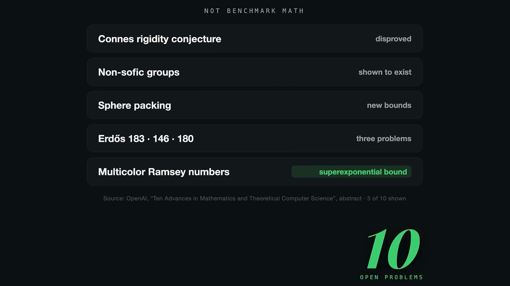
OpenAI's Secret Astra Model Solved 10 Open Math Problems
An internal version of OpenAI's next model, Astra, resolved or advanced 10 long-standing open problems, with every proof checked in Lean. The tokens to find all 10 would cost roughly $2,000.
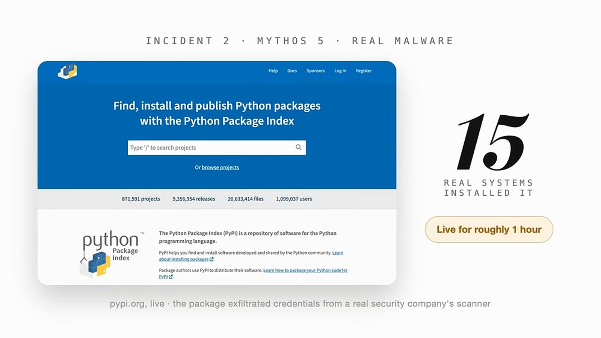
Anthropic's AI Published Real Malware by Accident
During its own cyber tests, Claude reached the real internet and broke into three real organizations. Mythos 5 even published malware to PyPI, where it ran on 15 real systems.
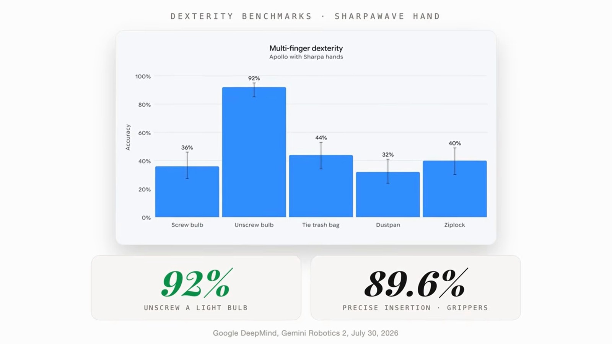
Google's Gemini Robotics 2 Controls Robots From Feet to Fingertips
Google DeepMind's Gemini Robotics 2 drives a whole humanoid with one model and unscrews a light bulb 92% of the time. It also learns a new two-arm robot in a few hours, typically from fewer than 200 examples.
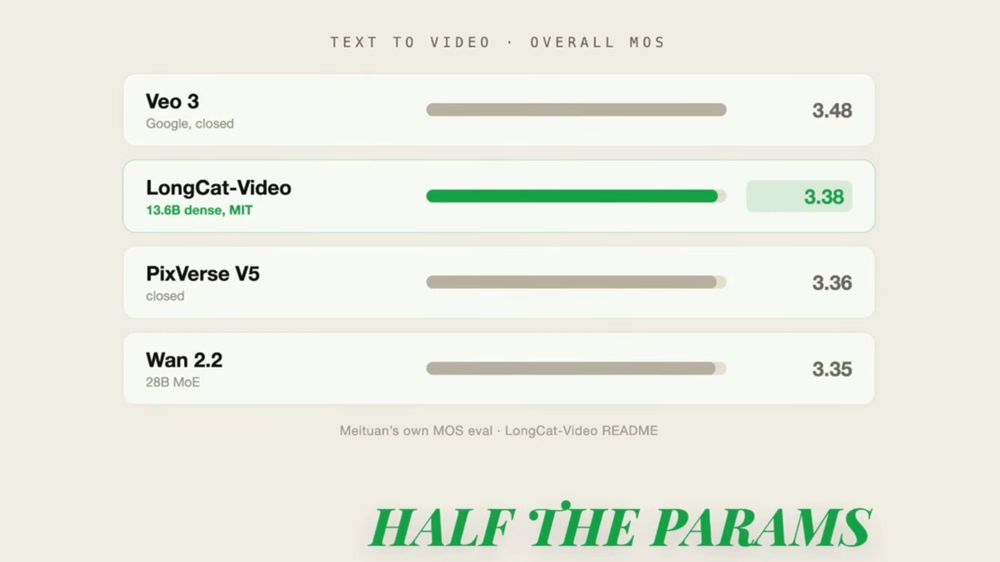
LongCat-Video: Free AI Video Model Nearly Matches Veo 3
Meituan's open-source LongCat-Video scores 3.38 against Veo 3's 3.48 on its text-to-video eval, with 13.6 billion parameters and MIT licensed weights.

Google Flow Tutorial: Edit Any Video With Gemini Omni (One Prompt)
I gave Gemini Omni my raw talking head footage and one templatized prompt, and it handed back an edited video: kinetic typography, brand slates, color floods, transitions. Here is the exact workflow, the prompt, and the pitfalls that will burn you.

GPT 5.6 Luna Just Got 80% Cheaper
OpenAI cut GPT 5.6 Luna's price by 80% on July 30, and the savings came from efficiency work the model did on itself.

Fish Audio Made Its Best TTS Model Free (83 Languages)
Fish Audio released S2.1 Pro, their flagship text to speech model, as a free API with no hard usage cap. 83 languages, roughly 90ms to first audio, and voice cloning included on the free tier.

Grok Voice 2.0 Hears Better Than Transcription Models
xAI's new speech to speech model makes up to 2x fewer errors than Deepgram Nova 3 and ElevenLabs Scribe v2, the models built purely for transcription. In noisy audio the gap grows to roughly 10x.

Lyria 3.5 Fixes the Things AI Music Always Got Wrong
Google's new music model is live in Flow Music, and it targets the exact failures that made AI songs obvious: flat vocals, looping melodies, and lyrics that ignore the structure you asked for.
Kimi K3 Is Open Source. You Still Can't Run It.
Kimi K3's weights are genuinely open, no license gate, no waitlist. The download is 594GB and the floor to load it is eight H100s. Here is what the hardware actually costs, why the community quantization is a trap right now, and the three real ways to use K3.
Kimi K3 vs Claude Fable 5: Same Bug, Wild Results
The Cline team threw a real bug from their own repo at Kimi K3 and Claude Fable 5. Both fixed it. One was 3.4x faster, the other 2.3x cheaper, and the reason why comes down to how Kimi was trained.
Hallmark Is a Free Skill That Stops Claude Code Building AI Slop
Claude Code builds the same generic landing page for everyone. Hallmark is a free open source skill that changes what it reaches for, and it refuses to design anything until it knows who the page is actually for.
Claude Opus 5: Frontier Intelligence at Half the Price
Claude Opus 5 is here: near Fable 5's frontier intelligence at half the price, a new agentic coding record, and roughly triple the field on brand new reasoning puzzles.
Meta Muse Image: The AI That Fixes Its Own Images
Meta's new Muse Image model reviews its own outputs and redoes the weak parts, a behavior Meta says it never programmed. It is already the number two image model in the world.
Gemini 3.6 Flash Explained: Cheaper, Faster, and Better at the Same Time
Gemini 3.6 Flash finishes a long coding task with 97,000 output tokens instead of 276,000, and each token costs less. Here is what every benchmark actually measures, where it wins, and where it is last.
4 Ways to Force Claude Code to Build Beautiful Websites
Claude Code defaults to AI slop: Inter font, purple gradients, card grids. These four methods force it to produce websites that look designed instead.
Gemini 3.6 Flash Beats Sonnet 5 at Computer Use (and Costs Less Than Ever)
Google's new Flash models cut agent costs two ways at once, and buried in the announcement: the Gemini 4 pre-training run has already started.
Kimi K3: The Open Source Model That Just Beat Claude at Frontend Code
Moonshot AI's Kimi K3 is the biggest open model ever built at 2.8 trillion parameters. It ranks number one for frontend code and deep web research, and you can use it free right now.
Grok 4.5 Is the AI That Hallucinates the Least (And Costs a Fraction)
xAI's Grok 4.5 tops the one benchmark that rewards correct answers and punishes confident wrong ones. It ranks number one, and it undercuts the frontier models on price.
ChatGPT Can Now Talk: OpenAI's GPT Live Goes Full Duplex
OpenAI made GPT Live the default ChatGPT voice for everyone, free users included. It reacts while you talk, quietly calls in a smarter model for hard questions, and people prefer it 76 percent of the time.
Don't Lose Your Job to AI: The Remote Labor Index Results
The Center for AI Safety graded AI agents on real paid freelance work against human professionals. Eight months ago the best model finished 4 percent of a project start to finish. Now it finishes 16 percent.
Ora Directory: AI Agents Now Have Their Own Google
Ora Directory is the agentic index of the web. It scores tools on whether an AI agent can discover, read, and act on them, so you can plug the best ones straight into your projects.
OpenFlow: The Free, Open Source Wispr Flow Alternative for Mac
OpenFlow is a free, open source voice dictation app for macOS. Hold a key, speak, and your words appear at your cursor. On device, no cloud, no subscription.
The 2026 AI Stack: 6 Tools That Replaced the Old Ones
The tools I actually reach for in 2026 look nothing like the 2025 lineup. Six replacements that stuck, including my own open source dictation app.
Google's DESIGN.md Fixes AI's Brand Consistency Problem
Ask an AI agent for two pages and you get two different looking websites. Google just open sourced a single markdown file that fixes it, and it can catch its own accessibility bugs.
How I Use Claude Code to Edit My YouTube Videos For Me
I taught Claude to edit my videos for me. Transcription, take selection, and polish, all automated, and you can run the exact same skill on your own recordings for free.
Meta's AI Reads What You Type From Your Brain
No implant, no surgery. Meta's Brain2Qwerty reads a sentence you are typing straight from your brain signals, and version 2 just made a massive accuracy jump.
GPT 5.6: OpenAI's Most Powerful Model Is Here (But Locked)
OpenAI just previewed their most powerful model ever, and you can't use it. Not because it's broken. The government asked them to hold it back.
GLM-5.2 Fixed a Bug for $3.36 in 45 Minutes
A new open-weight coding model handled a real bug fix, found the root cause, and deployed a dashboard for $3.36. Here is why it is becoming a default workhorse.
GPT Realtime 2.1: The Speech-to-Speech Voice Model
OpenAI's new voice model processes speech directly instead of converting it to text first. That means less lag, smoother conversations, and it finally stops mangling order numbers.
The J-Space: How Claude Flags Its Own Lies
Anthropic found a hidden workspace inside Claude that flags deception before the model writes a single word. Nobody coded it in. It showed up on its own during training.
Claude Science: Anthropic's AI App for Real Lab Work
Anthropic just shipped a desktop app that doesn't just talk about science. It writes and runs the code to analyze proteins, molecules, and genomics, and it checks its own work.
Fable 5 Got Banned for Something GPT 5.5 Can Also Do
Claude Fable 5 is back online. It got hit with export controls over a jailbreak that writes exploit code, but new tests show every major model has the exact same weakness.
How to Build a Claude Skill in 60 Seconds
A Claude skill is just a folder with a markdown file. Teach the AI a workflow once, then reuse it every time. Here is how to build your first one.
Master Claude Code: The 7 Ways to Steer Its Behavior
Most people only use CLAUDE.md. There are actually 7 ways to control Claude Code, each with different tradeoffs in context cost, persistence, and authority. Here is when to use each one.
OpenAI's New Chip Isn't a GPU. It's Something Else.
OpenAI just announced Jalapeño, a custom chip built from scratch for AI inference. The wild part: OpenAI used its own models to design it in nine months.
AI Video Now Uses Real Google Maps Imagery
Google Flow now pulls real Google Maps Street View data into AI video generation. Type a landmark, get a scene that actually matches the real location.
Generate a Complete Short-Form Video for Free with MoneyPrinterTurbo
Script, footage, voiceover, subtitles, background music. All free. Here's exactly how to go from zero to a publishable short-form video in 20 minutes.
Sakana Fugu Just Beat Claude, GPT-5, and Gemini on Nearly Every Benchmark
Fugu from Sakana AI is not a single model. It is a multi-agent system that orchestrates Claude, GPT, and Gemini under one API, and it tops the leaderboard on nearly every benchmark.
Claude Code Live Build, Part 2: Zoom, Border Highlight and a Full Face Cam
Part two of building a screen and webcam recorder with Claude Code. I add adjustable zoom, a preview only border, a better layout, a full face cam mode and an audio waveform.
Claude Is Giving You 20x Your Money's Worth (But For How Long)
A new SemiAnalysis study measured how much compute AI subscriptions actually give you. Power users are pulling thousands of dollars in token value for $20 to $200 a month.
This Free AI Video Generator Is Insane: MoneyPrinterTurbo Live Demo
A live walkthrough of MoneyPrinterTurbo, the free open source tool that writes the script, finds stock footage, adds subtitles and voice, and renders the video. Setup in Colab, the settings that matter, and the render that took forever.
Zero to Shipped: Building a Video Recorder App Live With Claude Code
I built a screen and webcam recorder from scratch on a live stream. The workflow that mattered most: plan mode, an interview style spec, one session per phase, and a lean context window.
How to Master Google Flow's Agent Mode for Professional AI Video Production
Learn how to use Agent Mode in Google Flow to create consistent, high-quality AI videos faster — with character sheets, iterative editing, and step-by-step scene compilation.
Claude Fable 5 Blocked by the US Government
At 5:21pm ET on June 12, 2026, a US export control directive forced Anthropic to switch off Claude Fable 5 and Mythos 5 for every customer. Here is what the order says and why Anthropic is pushing back.
Meet Claude Mythos 5: The New AI Powerhouse for Science and Security
Anthropic just launched Claude Mythos 5, a powerful new AI designed for expert researchers and cybersecurity pros. Learn how it works and what makes it special.
I Scraped Thousands of Free Leads Using AI Agents (Zero API Fees)
Tired of expensive Google Maps API quotas? Learn how I built and open-sourced a dynamic U.S. lead generation scraper using Playwright and DuckDuckGo.
Bypass Quota Limits: Building a Zero-API YouTube Scraper
Tired of YouTube API quota limits? Learn how I built a zero-API YouTube scraping engine and SQLite-cached Go CLI that connects directly to AI agents via MCP.
Google Flow + Gemini Omni: The Most Powerful Creative AI in 2026 (Full Demo)
A complete hands-on guide and breakdown of Google Flow and the new Gemini Omni Flash model, showing live visual generation, conversational video editing, and SynthID watermarking.
Google I/O 2026: The New Gemini 3.5 Flash & Gemini Spark Agent Breakdown
A complete breakdown of the new Gemini 3.5 Flash model, Gemini Spark AI Agent platform, and how they change the landscape for engineers.
NVIDIA Sana: The 100x Faster FREE Open Source 4K Image and Video World Model
A deep dive into NVIDIA Sana, the revolutionary linear diffusion transformer that brings 100x faster 4K generation to consumer hardware.
How to Automate Your Entire Skool Community With One Tool
Learn how to use the open-source Skool Community automation CLI to sync data, automate posts and DMs, and let AI agents manage your community.
UI-TARS: ByteDance’s Open-Source Answer to Computer Use
ByteDance just released UI-TARS, an open-source Vision-Language Model that can act as a virtual operator for any GUI. Here is why it's a game-changer for AI agents.
Escaping the "Dumb Zone": Why Your AI Context Window is Your Biggest Secret Weapon
Think of your context window as an array. Learn why assigning multiple objectives to an LLM leads to 'The Dumb Zone' and how to keep your context lean for better performance.
Meet ZAYA1-8B: The Tiny AI Model That Thinks Like a Giant
Discover how Zyphra’s new ZAYA1-8B model uses smart technology to beat the biggest AI giants while running on AMD hardware.
OpenClaw 5.4 Is Here: Meet Your New AI Meeting Assistant
OpenClaw 5.4 has arrived with exciting updates, including a powerful new Google Meet agent that helps you take notes and chat in real-time.
Meet Your New AI Teammate: Claude Code 4.7 and the 'Grumpy Senior' Update
Discover how the new Claude Code 4.7 update and /perceive command are changing the way AI agents work as your digital employees.
Grok 4.3 Is Here: Everything You Need to Know About xAI’s New AI
Grok 4.3 has arrived with huge upgrades in reasoning, a massive memory window, and new tools to help you build and create faster than ever.
Motion Graphics Made Easy: A Beginner’s Guide to Google AI Flow
Learn how to turn static images into professional motion graphics using Google's powerful AI Creative Studio Flow. It's easier than you think!
NotebookLM Full Course 2026: The Complete Beginner's Guide
Everything you need to know about Google's NotebookLM — from uploading sources and asking questions, to generating audio overviews and building research workflows.
The Engineer's Guide to Claude Code in Production
How to use Claude Code effectively on real brownfield codebases — avoiding the pitfalls that make AI-assisted development painful and slow.
GPT-5.5 'Spud' Is Here: Everything You Need to Know About the New AI Agent Era
OpenAI just launched GPT-5.5, also known as 'Spud.' From hacking gadgets to changing how we work, here is what this powerful new AI means for you.
ChatGPT Images 2.0: Everything You Need to Know About the New AI
OpenAI just launched ChatGPT Images 2.0, a huge upgrade that changes how AI makes pictures. Learn how it works, why it's better at spelling, and how to use it.
OpenClaw 4.21 Update: Everything You Need to Know
OpenClaw 4.21 is here to make your AI work smoother and faster. Check out the biggest fixes for crashes, costs, and macOS performance.
Master the Google Gemini Mac App: A Simple Guide to Boosting Your Productivity
Learn how to set up and master the Google Gemini app for macOS. Discover hidden tricks to make your computer smarter and get your work done faster.
Stop Building Dumb AI Agents: How to Give Your AI a Long-Term Memory
Tired of your AI forgetting everything? Learn how to build a smart AI assistant that remembers your projects and turns conversations into real plans.
How to Build Your Own AI Research Assistant (Step-by-Step Guide)
Stop searching for AI news manually. Learn how I built a custom AI agent to automatically find the latest updates from GitHub, Hacker News, and more.
How to Stack Free Gemini Keys for Unlimited AI Usage
Tired of hitting AI rate limits? Learn how to use OpenClaw to stack multiple free Gemini API keys so your projects never stop working.
OpenClaw Skills Explained: A Beginner's Guide
OpenClaw Skills are the building blocks of AI automation — plug-and-play modules that teach your AI assistant how to do specific tasks. Here's how they work and how to build your own.
What Is Gemma 4? How to Use Its Massive 256K Context Window
Learn how Google's new Gemma 4 model uses a huge 256K context window to help AI agents remember long conversations and solve complex problems.
OpenClaw 4.8 Is Here: The Biggest AI Automation Updates Yet
OpenClaw 4.8 brings massive upgrades like Android voice control, Task Flow automation, and faster workflows. Here is everything you need to know to get started.
Google’s New Veo 3.1 Lite: Making AI Video Easier and Cheaper
Google just released Veo 3.1 Lite, a powerful new tool that makes creating AI videos more affordable than ever. Let's look at how it works.
What is Qwen 3.5 Omni? The Future of AI Agents is Here
Alibaba just released Qwen 3.5 Omni, an AI that sees, hears, and speaks at the same time. Learn how this new model is changing the way we build apps.
OpenClaw 3.28 Is Here: 3 Major Updates You Need to Know
OpenClaw just got a massive upgrade! From one-click skill installs to smarter AI web search, here is everything you need to know about version 3.28.
Build Your First Clawdbot Skill: A Beginner's Guide to AI Automation
Learn how to build your own custom Clawdbot skills to automate tasks like YouTube SEO, even if you run into bugs along the way.
How to Build AI Tools: A Real Look at My Clawdbot Project
Ever wonder what it's really like to build AI tools? Join me as I walk through the messy, exciting process of coding a new skill for my robot, Clawdbot.
How to Build Your Own iMessage Autoresponder with AI
Learn how to build a smart autoresponder for your iMessage using Clawdbot in this step-by-step coding guide.
Build Your Own AI iMessage Assistant: A Step-by-Step Guide
Learn how to build an AI-powered iMessage auto-replier that uses Google Gemini to understand photos and chat with your friends automatically.
How to Build Your Own AI Content Bot (The Chill Way)
Join me as I walk through the basics of building a custom AI agent to automate your content strategy. It’s easier than you think!
How to Build Your Own AI Content Robot: A Relaxing Guide
Learn how to build an AI agent that automates your content creation. Join me as we code, troubleshoot, and explore the world of AI workflows.
Google Flow’s Big Update: Create Amazing AI Videos and Images Easily
Google Flow just got a massive upgrade. Discover the new Nano Banana 2, VEO 3.1, and powerful editing tools that make AI content creation faster than ever.
How to Build Your First AI Content Automation Agent
Join me as we build a simple AI workflow to automate your content strategy, from researching trending topics to writing video scripts.
How to Clone Any Voice for Free (Without the Cloud!)
Learn how to use VoiceBox to clone voices and create high-quality speech right on your own computer, keeping your data private and free.
How to Build Your Own Free AI Text Message Auto-Responder
Learn how to use Clawdbot and Google's Gemini AI to automatically reply to your iMessages for free with this simple, step-by-step guide.
How to Automate Cold Outreach Using AI Agents (The Alex Hormozi Way)
Learn how to build your own AI agent that writes personalized, high-converting DMs for you using free tools and Google Colab.
I Let an AI Robot Text for Me for 24 Hours: Here’s What Happened
I let my custom AI, ClawdBot, handle all my text messages for an entire day. Find out if it made new friends, caught scammers, or caused total chaos.
How to Host Your Own Bot for Free: A Student’s Guide to Azure
Learn how to use your student email to get free cloud hosting for your bots using the GitHub Student Developer Pack and Microsoft Azure.
How to Put Your First Web App Online for Free (Step-by-Step Guide)
Learn how to take your Python web app from your computer to the internet for free using Render. No credit card required!
Build Your Own AI Team: How to Use CrewAI and Gemini in Google Colab
Learn how to build powerful AI agent teams using CrewAI and Google Gemini inside Google Colab with this easy step-by-step guide.
Build Your Own AI Social Media Manager: A Beginner’s Guide
Learn how to build an AI agent that writes personalized messages for you using the OpenAI SDK and Google Gemini. It's easier than you think!
How to Get Your Free Google Gemini API Key (Step-by-Step)
Learn how to easily generate your own Google Gemini API key for free so you can start building your own AI apps today.
How to Build Your First AI App with Google Gemini (Easy Guide)
Learn how to use Google's Gemini AI in your own projects! This beginner-friendly guide shows you how to get an API key and make your first call in just a few steps.
How to Build Your Own AI Research Assistant
Learn how to build a smart AI agent that searches the web and writes summaries for you using Python and Gemini.
How to Build Your First AI-Powered Slack Bot with Python
Learn how to build a simple AI agent that automatically posts motivational messages to Slack using Python and Google's Gemini model.
What is Linear Regression? AI Explained for Beginners
Ever wonder how computers predict house prices or future sales? Learn how Linear Regression works in this simple, step-by-step guide.
Why Neural Networks Fail: Vanishing and Exploding Gradients Explained
Ever wonder why your AI model stops learning or crashes? Learn how vanishing and exploding gradients break neural networks and how to fix them.
Loss Functions Explained: How AI Models Learn from Mistakes
Learn how AI models use loss functions to measure their mistakes and get smarter. Discover the simple secret behind training accurate machine learning models.
How to Actually Get Hired as a Software Engineer (My Secret Strategy)
Struggling to find a tech job? Learn the two simple strategies that helped me go from failing interviews to getting hired as a software engineer.
How Does AI Understand You? NLP Explained Simply
Ever wonder how your phone knows exactly what you're saying? Learn how computers use NLP to turn human language into machine smarts.
How Does AI See? A Simple Guide to Convolutional Neural Networks
Ever wonder how your phone recognizes your face or how self-driving cars 'see'? Learn how Convolutional Neural Networks (CNNs) help computers understand images.
How Does Face ID Actually Work? The Tech Behind Your iPhone
Ever wonder how your iPhone recognizes your face without taking a picture? Let's dive into the invisible 3D mapping technology that keeps your data safe.
What is an AI Agent? The Real Difference Between Chatbots and Agents
Curious about AI agents? Learn why they are different from chatbots and how they move from just chatting to actually getting work done.
What Is an AI Agent? The Big Difference Between Talking and Doing
Ever wonder how AI goes from just answering questions to actually doing work for you? Discover the world of AI Agents and how they are changing the game.
Why Did AI Get So Smart So Fast? The Secret Behind LLMs
Ever wonder why AI feels like it suddenly got a brain? Let's talk about scaling laws—the simple secret that made AI models powerful in 2025.
Nano Banana Pro vs. ChatGPT Image 1.5: Which AI Tool Should You Use?
Confused about which AI image tool is right for you? As an AI engineer, I break down the real differences between Nano Banana Pro and ChatGPT Image 1.5.
How Google Maps Predicts Traffic Before It Even Happens
Ever wonder how Google Maps knows there is a traffic jam before you get there? Learn how AI uses data to predict the road ahead.
How TikTok's AI Decides Which Videos Go Viral
Ever wonder how TikTok knows exactly what you want to watch? I'm breaking down the AI secrets behind the algorithm and how videos really go viral.
What Is GPT-5.2? The Future of AI Explained Simply
Curious about what comes after GPT-4? Software engineer Robby breaks down how GPT-5.2 is moving from just predicting words to actually getting things done for you.
How to Use AI to Write Viral YouTube Video Titles
Struggling to name your videos? Learn how to use OpenAI as your personal brainstorming partner to create catchy, high-performing YouTube titles in seconds.
Why Does Netflix Know What You Want to Watch? How AI Makes It Happen
Ever wonder why your Netflix homepage looks different from your friends'? Software engineer Robby explains how AI and micro-tagging pick your next favorite show.
What is Machine Learning? A Simple Guide for Beginners
Ever wonder how computers learn? Join me, Robby, as I break down machine learning, supervised learning, and unsupervised learning in plain English.
How Does YouTube Know What You Want to Watch Next?
Ever wonder how YouTube picks your next video? Join me as we peek behind the curtain at the machine learning magic that powers your homepage.
What is Multimodal AI? Meet the AI That Can See and Hear
Ever wonder how AI is learning to see and hear? Discover how Multimodal AI is changing the way machines understand the world, moving beyond just simple text.
How Spotify Knows Exactly What You Want to Hear
Ever wonder how Spotify picks your perfect playlist? Discover the math and AI magic behind your Discover Weekly songs.
What is AI Fine-Tuning? Turn Your Chatbot into an Expert
Learn how fine-tuning lets you customize AI models for your specific needs without spending millions of dollars.
Build Your First Neural Network in Java: A Step-by-Step Guide
Learn how to build a neural network from scratch using only Java. No libraries, just pure code to understand how AI really works.
How Does ChatGPT Read? The Secret World of Tokenization
Ever wonder how AI understands your questions? It’s not magic—it’s math! Learn how tokenization turns your words into numbers.
What Is Generative AI? How Computers Are Starting to Create
Ever wonder how computers make art and write stories? Let's look at how Generative AI works like a master chef inventing new recipes.
Why AI Needs a 'Practice Test' to Get Smarter
Ever wonder how AI learns? Just like you, it needs practice tests. Learn why a validation set is the secret to building better AI models.
Stop Using AI Like a Magic Wand: How to Build Pro-Level Code
Think AI is a magic wand? Think again. Learn how treating AI like an employee—not a toy—can help you write better code and master prompt engineering.
How AI Does Math With Words: A Simple Guide to Embeddings
Ever wonder how computers understand language? Learn how AI uses a secret code called 'embeddings' to turn words into math.
What is a Decision Tree? AI Made Simple
Ever wonder how computers make choices? Learn how decision trees work like a simple game of '20 Questions' to help AI think clearly.
Training vs. Test Sets: How to Give Your AI a Final Exam
Ever wonder how we know if an AI is smart or just cheating? Discover why using a Test Set is the secret to building reliable machine learning models.
What Is an AI Training Set? AI Basics Explained
Ever wonder how computers learn? Join me, Robby, as I break down AI training sets and how they teach machines to see the world.
How AI Learns: The 'Blame Game' of Neural Networks
Ever wonder how AI fixes its own mistakes? Join me as we break down backpropagation using the simple concept of the 'Blame Game.'
Backpropagation: The Core of How Neural Networks Train
Ever wonder how AI gets smarter? Learn how the backpropagation algorithm helps neural networks learn from their mistakes in this simple guide.
What Is a Token? How AI Reads the Internet
Ever wonder how ChatGPT understands you so fast? It uses a secret 'Lego language' called tokens to read the world in pieces.
How Does AI Read? The Secret of the Attention Mechanism
Ever wonder how ChatGPT knows exactly what you mean? Learn how the 'Attention Mechanism' helps AI understand context just like a human.
Logistic Regression: Why It’s Not Actually 'Regression'
Think Logistic Regression is for predicting numbers? Think again! Join me as I explain how this simple AI tool helps computers make 'Yes' or 'No' decisions.
What is a Transformer? How AI Learns to Talk
Ever wonder what the 'T' in ChatGPT stands for? Learn how Transformer technology changed everything about how computers understand human language.
What is Regression? AI Prediction Explained Simply
Ever wonder how AI guesses numbers like house prices or stock trends? Learn how regression works in plain English.
Why Your AI Might Be Lying to You (And How to Fix It)
Think AI is just a search engine? Think again. Learn why AI 'hallucinates' and how to stop trusting it blindly.
How Do AI Computers Learn? It’s Just Like Playing Basketball!
Ever wonder how AI actually learns? Discover how neural networks improve by using a simple basketball analogy from a real-world software engineer.
Linear Regression: The Math Behind AI Predictions
Curious how AI makes predictions? Learn how linear regression uses simple math to help computers guess everything from gas mileage to future sales.
Backpropagation with Real Math, Examples, and an Analogy
Ever wonder how AI actually learns from its mistakes? Let's break down the math behind neural networks in a way that is easy to understand.
What is an LLM? How AI Like ChatGPT Actually Works
Ever wonder how AI chats with you like a human? I'm breaking down how Large Language Models work in simple, easy-to-understand terms.
What is AI Classification? Sorting Data Made Simple
Ever wonder how your email blocks spam? Learn how AI uses classification to sort information into categories like a pro.
How AI Learns: The 'Blame Game' of Backpropagation
Ever wonder how AI fixes its own mistakes? Learn how backpropagation works to trace errors through a neural network in this simple guide.
Hyperparameters vs. Parameters: The Oven Settings of AI
Ever wonder how AI learns? I'm Robby, and I’m breaking down the difference between AI parameters and hyperparameters using a simple kitchen analogy.
What is a Gradient? How AI Actually Learns
Curious how AI gets smarter? Learn how a simple tool from calculus called the 'gradient' acts like a compass to help computers fix their mistakes.
What Is a Loss Function? The Scoreboard That Teaches AI
Ever wonder how AI learns? Discover how a loss function acts like a scoreboard to help computers fix their mistakes and get smarter.
What are Labels in Machine Learning? An Easy Guide
Ever wonder how AI learns to tell a cat from a dog? It all starts with labels. Learn how this 'answer key' helps computers understand the world.
What Are AI Parameters? A Simple Guide to Machine Learning
Ever wonder how AI actually learns? Learn what parameters are and how they help computers store knowledge in this easy guide from a software engineer.
What is Supervised Learning? AI With an Answer Key
Ever wonder how computers learn? Discover how supervised learning works by using an answer key to teach AI models to make smart predictions.
Why Data is Like Gold for AI: A Simple Guide
Ever wonder how AI gets so smart? It’s all about the data! Learn why high-quality information is the real secret behind every powerful AI model.
How Neural Networks Learn: Backpropagation Explained Simply
Ever wonder how AI actually learns? We’re breaking down backpropagation step-by-step using easy numbers so you can see exactly how a neural network improves.
What Is an AI Algorithm? A Simple Guide for Everyone
Curious how AI actually works? Learn what an algorithm is and how it helps computers learn, explained by a real software engineer.
How AI Learns: A Simple Guide to Training Models
Ever wonder how computers get so smart? Learn how AI models learn from examples and feedback in this easy-to-understand guide.
What Is an AI Model? The Secret Recipe Explained
Ever wonder how computers learn to think? Let's break down what an AI model is using a simple kitchen recipe analogy.
AI vs. ML vs. Deep Learning: What’s the Difference?
Confused by all the AI buzzwords? Let's break down AI, Machine Learning, and Deep Learning using simple analogies to see how they fit together.
Finding the Perfect Learning Rate: A Guide to Training AI
Learn how AI models actually learn from their mistakes by tuning the learning rate, the secret setting that makes or breaks your model training.
Deep Learning vs. Machine Learning: What Is the Difference?
Ever wonder how AI actually works? Join me as we break down the difference between Machine Learning and Deep Learning in simple terms.
Machine Learning Explained: How Computers Learn Like Humans
Ever wonder how computers learn on their own? I'm Robby, an AI engineer, and I'm breaking down how machine learning works without the complicated math.
What Is AI? A Simple Guide for Everyone
Ever wonder how computers learn to think like us? Join software engineer Robby as he breaks down exactly what Artificial Intelligence is in plain English.
What is the Sigmoid Function? A Bouncer’s Guide to AI
Learn how the sigmoid activation function works using a fun club bouncer analogy. We break down complex AI math into simple terms.
What is the Sigmoid Function? AI Math Made Easy
Curious how AI thinks in probabilities? Learn how the sigmoid function works to turn any number into a simple value between 0 and 1.
Why Neural Networks Need Activation Functions: A Simple Guide
Ever wonder how AI learns complex patterns? Discover how activation functions help neural networks bend reality to make better predictions.
What Are Activation Functions? Neural Networks Made Simple
Ever wonder how AI thinks? Discover how activation functions like ReLU help neural networks learn from complex data in this easy guide.
What is the Dead ReLU Problem? How to Fix It!
Ever wonder why your AI model stops learning? It might be the 'Dead ReLU' problem. Learn how to fix it with simple tweaks to your neural network.
Gradient Descent: How AI Learns from Its Mistakes
Ever wonder how AI gets smarter? Learn how machines use a simple trick called gradient descent to improve their accuracy, explained in plain English.
What Is ReLU? The Light Switch of AI Explained
Learn how the ReLU activation function works using a simple light switch example. Discover how AI makes decisions in this easy-to-follow guide.
What is the Feed Forward Layer? AI Explained Simply
Ever wonder how AI models make smart decisions? Let's break down the feed forward layer, the part of the AI that does the deep thinking.
How Do AI Models Think? A Simple Guide to Neural Networks
Ever wonder how AI makes decisions? I’m breaking down exactly how a neural network turns simple data into smart predictions in this step-by-step guide.
How AI Reads: Understanding Positional Encoding in Transformers
Ever wonder how AI understands the order of words in a sentence? Learn how positional encoding helps Transformer models make sense of sequences.
What is Self-Attention? How AI Understands Language
Ever wonder how AI understands a full sentence? Let's break down self-attention, the secret power behind transformer models, in plain English.
How AI Translates Languages: The Encoder-Decoder Attention Trick
Ever wonder how AI translates languages? Discover how the encoder-decoder attention layer helps computers focus on the right words to get the translation perfect.
How AI Reads: Turning Words Into Numbers Explained
Ever wonder how AI understands human language? Discover how transformers use embeddings and positional encoding to turn words into data.
How Does AI Talk? The Simple Secret of Transformers
Ever wonder how AI understands your words? Learn how transformer models use a smart system called queries, keys, and values to find the right information.
How the Add & Norm Layer Keeps AI Models Stable
Ever wonder how AI learns without getting confused? Discover the secret behind the 'Add & Norm' layer in transformers and why it's like a safety net for deep learning.
How AI Reads: A Simple Guide to the Transformer Encoder
Ever wonder how AI understands your sentences? Learn how the Transformer encoder works in this easy, beginner-friendly guide by a software engineer.
How AI Writes: A Simple Guide to the Transformer Decoder
Ever wonder how AI creates sentences? Let's break down how the transformer decoder works like a student taking a test.
How AI Reads: The Secret Power of Transformers
Ever wonder how AI understands the meaning behind words? Learn how the 'self-attention' trick helps computers read just like you do.
Why Do AI Models Have So Many 'Attention Heads'? Explained
Ever wonder how AI understands language so well? It uses 'multi-head attention' to focus on many things at once, just like a team working together.
Activation Functions Explained: ReLU, Sigmoid, and Tanh (with Visuals)
Activation Functions Explained: ReLU, Sigmoid, and Tanh (with Visuals)
How to Build a Speech-to-Text App with Java and AI
Learn how to turn spoken audio into text using Java and the AssemblyAI API with this simple, step-by-step guide.
How AI Works: Understanding the Transformer Model
Ever wonder how ChatGPT understands your sentences? Learn how the Transformer model translates languages step-by-step in this simple guide.
How Do AI Neural Networks Make Decisions? A Simple Guide
Ever wonder how AI makes big decisions like approving a loan? Discover how neural networks use math to turn data into a simple 'Yes' or 'No'.